构建Lua解释器Part7：构建完整的语法分析器(上)
前言
在上一章里，我完成了词法分析器的设计与实现的论述，接下来我要继续论述语法分析器的设计与实现。限于篇幅，我将会把语法分析器分为两个部分来论述，本章为上部，下一章为下部。本章将会重新复习编译器的构造，并且论述编译流程，以及lua的parser所涉及的编译相关的内容，最后通过阐述虚拟机相关指令的实现，作为结尾。本章所涉及的代码，全部在dummylua工程里，欢迎star。另外，如果你喜欢我写的文章，喜欢讨论技术，欢迎加入我创建的群：QQ185017593
编译器结构
早在Part5的时候，我就论述过编译器的构造了，现在重新回顾一下，按照编译器标准的划分方式，编译器可以分为前端、优化器和后端。编译器前端主要的工作，就是将源码经过语法分析，语义分析后，生成抽象语法树AST(Abstract Syntax Tree)，然后将AST本身，或者转化为另一种形式的中间表示(Intermediate Representation简称IR)，交给优化器进行优化，然后再交给编译器后端去生成机器码。 图1
图1
编译器的本质，就是将一种语言，翻译成另一种语言，在Part5中，我也较为详细地论述了编译器和解释器的区别，这里简单回顾一下。编译器是将源码编译成对应平台的机器码，生成可执行文件或者动态库，尔后存储在磁盘里。当我们要执行这些代码的时候，需要创建一个进程，然后加载这些目标代码才能执行。而解释器则是可以直接加载源码，然后在解释器内部编译并且立刻执行。
Lua是标准的解释器，Lua代码被加载后，可以直接被编译，且立即执行。本章要讨论的内容则是Lua解释器内部的编译流程。Lua的编译工作，主要是由Parser模块来完成。
编译流程
按照《Compilers Principles Techniques and Tools》的定义，编译流程大概要经历以下几个步骤：
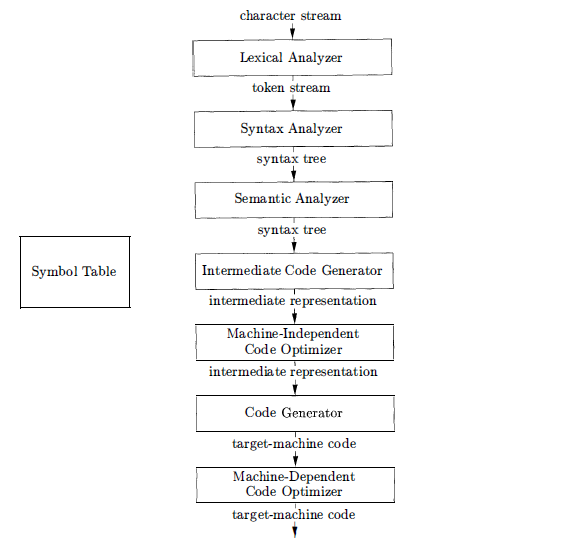
图2- 首先，我们输入的代码字符流，会被加载到词法分析器–lexer中，进行词法分析，从而获得token流
- 语法分析器，会从词法分析器中，不断获得token进行语法分析，判断输入代码的语法结构是否合法，如果不合法则抛错，如果合法则会生成一个抽象语法树–AST[1]
- 语义分析器，会对上一阶段的AST，进行语义分析，分析语义内容是否合法，比如code is water在语法分析阶段，语法上是合法的，但是语义上是无意义的，如果不合法则抛出错误中断编译流程，否则对AST进行改造
- 在经过语义分析阶段之后，中间代码生成器，会将AST转化为另一种中间表示(IR)，一般是三址代码(three-address code)，这种代码与平台无关，但是利于被翻译成与机器平台相关的代码
- 随后，优化器会对IR进行指令优化，提升最终的性能
- 最后会通过代码生成器Code Generator转化为目标机器码
- 目标机器码还可以经过Machine-Dependent Code Optimizer进行进一步优化
实际上，图2中的词法分析器(Lexical Analyzer)、语法分析器(Syntax Analyzer)、语义分析器(Semantic Analyzer)和中间代码生成器(Intermediate Code Generator)属于编译器前端，而代码生成器(Code Generator)和平台依赖代码优化器(Machine-Dependent Code Optimizer)则属于编译器后端。
实际上，编译过程中，出现错误，也不一定是要中断编译流程，有些编译器会尝试修复错误[2]，在lua中，遇到编译问题，则是终止编译流程。此外，IR也并非一定是三址代码，也可以是AST[3]。
Lua Parser的主要工作
如图2所示的编译流程中，词法分析器我已经在上一章详细论述过了。由于Lua实现了完整的虚拟机，有自己的虚拟机指令，因此它的编译流程只需要将Lua代码编译成虚拟机指令即可，Lua解释器没有内置JIT，因此不会将Lua代码编译成目标机器码，所有的虚拟机指令，均是由c语言编写，本质上来说，Lua的内置编译器只是一个前端编译器，而Lua虚拟机的虚拟机指令，则可以视为是一种IR，这种IR将在虚拟机里被识别并运行。
Lua的Parser模块，则是执行了语法分析和语义分析，最后将Lua代码编译成虚拟机指令，这些虚拟机指令最后会交给虚拟机执行。
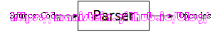
图3如果要将Lua的编译器和虚拟机通过一张图串联起来，那么图4则展示了这一点。
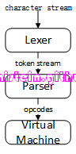
图4Lua的Parser的主要工作，就是进行语法分析和语义分析，最后直接生成opcodes，opcodes将作为IR交由vm去执行。
本章Parser要实现的部分
在继续讨论之前，我们首先要理清楚两个概念，即是statement和expression。首先我们来看看，在一门语言中什么是expression？expression是一个表达式，表达式最终能够演变成一个值，并且这个值可以被赋值到一个变量中，符合这个条件的就是expression否则就是statement[4]。而statement则是一系列操作的集合，它其他包含一系列的expression或者statement。statement是一门语言中单独的一个单元，一门语言中，有不同的statement类别，并且这些有限类别的statement组成的序列，构成一门语言的逻辑代码。
我们现在来看一个例子，如下所示：
1 | a = 1 |
左边所示的a、b、c、d是变量，右边的1、1+2*(3-4)、true和nil，最终能够演变成一个值，并且可以赋值给左边的变量，因此他们是表达式，而每一行的赋值语句，则是单独的statement。
此外，我们还有以下几种statement，并且这些statement都不能演变成一个值，并赋值到一个变量中：
1 | // do end statement |
这里需要注意的是，在lua中，function是个单独的类型，因此function statement是可以直接被赋值到某个变量的，因此从某种意义上来说，它也是expression，但是传统定义上，比如我们的c语言，这些都是作为statement存在的，我们现在需要关注这个特例。此外，functioncall是在expr statement分支里调用的，但是它的实现是包含在suffixedexp的函数里的，在lua中其本质上也被归类为expression。
我们现在来复习一下，构成lua语言的EBNF范式表达，从最顶层的层面来看，我们可以看到如下的结果：
1 | chunk ::= {stat [`;´]} [laststat[`;´]] |
其中stat表示statement，laststat表示last statement。一个lua脚本表示为一个chunk，一段被输入解释器的代码字符串也是一个chunk，上述的范式很好地表达了，statement是构成lua代码的最基础的单元。虽然Part5中有对EBNF范式进行说明，这里我们再来复习一下它的用法：
- {}表示内部的元素将会重复0次或者多次
- []表示内部的元素会出现1次或者0次
- ()表示这是一个集合
- |表示左右两边的元素选择其中的一个
- ::=表示左边的terminal由右边的terminal或、和nonterminal组成
如果你忘记terminal和nonterminal的概念，可以回到Part5的EBNF章节复习一下。
现在我们再来看一下，这个stat和laststat的EBNF表达:
1 | stat ::= ifstat | whilestat | dostat | forstat | repeatstat | functionstat | |
现在我们通过一张图来展示它的statement类别：
 图5
图5
我们已知，lua代码是由一系列的statement组合而成，因此在在编译过程中，就是要将脚本代码中的statement识别出来，并且进入到对应的编译分支，将其编译为虚拟机指令，由于篇幅所限，我无法在本章展示所有的编译分支逻辑，因此本章集中力量，对expr statement的设计和实现进行详细的分析。这也是本章Parser要实现的部分。
现在我将对lua的exprstat的EBNF范式进行说明，为了能够和我们后面的实现逻辑相契合，本章展示的EBNF与Part5展示的略有出入，一切以本章的为主，其EBNF范式如下所示：
1 | exprstat ::= func | assignment |
我们已经通过EBNF范式，来描述了我们即将实现的statement的语法结构和逻辑层次，可以看到，EBNF范式的表述比较抽象且复杂，为此，我绘制了一张图，用来展现它的逻辑层次：
{kind=link}
图6
图文的内容展示的很小，读者可以点击图片，显示大图，如果觉得图片还是不够大，可以右键点击在新的页签查看。该图是对上述EBNF范式的归纳，之所以要画这张图，是为了向读者自顶向下地展示完整的exprstat的语法结构，展示完整的解析层次，展示各个部件的构成和联系，它也是我们展示Parse Tree生成的绝佳利器。我们后续需要根据这张图来实现exprstat的编译逻辑。本章实现的Parser部分，只会对符合exprstat语法的代码进行编译，否则将抛出错误。
Parser所涉及的基本数据结构
本节，我将来介绍Parser的一些基本的数据结构，但是并不会一次性将所有的数据结构都在这里展示出来。有些数据结构在具体应用到的章节再进行展示，有利于帮助读者消化和理解。在lua的语法分析器中，最终要的数据结构分别是FuncState和Proto这两个结构了，我们先来看看FuncState结构，它的定义如下所示：
1 | // luaparser.h |
上面对FuncState结构的一些主要的变量进行了说明，关于upvalue，后续我会单独抽出一章节来详细讨论，因此这里不会深入研究这个部分，local变量，则会在下一章进行讲解。现在我们只要FuncState结构的变量，有一个初步的概念即可，要彻底理解它们，需要在编译流程的论述之后才能做到，我们接下来看看Proto的数据结构定义：
1 | // luaobject.h |
早在Part5的时候，我就有讲解过，一个lua脚本内部的代码本质上就是一个chunk，在chunk在编译后，本质上也是一个function对象，一般一个function对象对应一个Proto实例，在编译过程中，一个function则对应一个FuncState结构。FuncState结构实例，只在编译期存在。我将在本章后续的内容里，阐述编译流程，让读者能够真正理解。
本章所涉及的虚拟机指令
本节，将对本章涉及到的虚拟机指令进行说明，在开始阅读指令说明之前，如果你忘记了lua虚拟机指令的相关概念，那么我强烈建议读者复习一下Part5的【Lua的指令集编码方式】和【Lua5.3中的指令集】两个小节，本章涉及的指令如下所示：
- OP_MOVE R(A) := R(B)
将寄存器B中的内容，移动到寄存器A中 - OP_GETUPVAL R(A) := UpVal[B]
将upvalue列表中索引为B的值，拷贝到寄存器A中 - OP_GETTABUP R(A) := UpVal[B][RK( C )]
先在UpVal列表中，找到索引值为B的upvalue，它必须是一个table，然后从常量表K(当C值>=256)，中取出以K-256为索引的值，或者从寄存器C中的值，存放到寄存器A中 - OP_GETTABLE R(A) = R[B][RK( C )]
寄存器B中的值，必须是一个table，然后从常量表K(当C值>=256)，中取出以K-256为索引的值，或者从寄存器C中的值，存放到寄存器A中 - OP_SELF R(A+1) = R(B); R(A) = R(B)[RK( C )]
寄存器B的变量必须是个table，然后从常量表K(当C值>=256)，中取出以K-256为索引的值，或者从寄存器C中的值，存放到寄存器A中。最后将寄存器B中的table变量赋值给R(A+1) - OP_TEST if not (R(A) <=> C) then pc++
如果寄存器A的值，与C值相等，那么PC寄存器自增1(跳过下一个指令)，通常TEST指令后面必定要跟一个JUMP指令 - OP_TESTSET if (R(B) <=> C) then R(A) := R(B) else pc++
如果寄存器B的值，与C值相等，那么将寄存器B的值，赋值给寄存器A，否则PC寄存器自增1(跳过下一个指令)，通常TESTSET指令后面必定要跟一个JUMP指令 - OP_JUMP pc+=sBx; if (A) close all upvalues >= R(A - 1)
pc寄存器加上常量sBx的值 - OP_UNM R(A) := -R(B)
- OP_LEN R(A) := length of R(B)
- OP_BNOT R(A) := ~R(B)
- OP_NOT R(A) := not R(B)
- OP_ADD R(A) := RK(B) + RK( C )
- OP_SUB R(A) := RK(B) - RK( C )
- OP_MUL R(A) := RK(B) * RK( C )
- OP_DIV R(A) := RK(B) / RK( C )
- OP_IDIV R(A) := RK(B) // RK( C )
- OP_MOD R(A) := RK(B) % RK( C )
- OP_POW R(A) := RK(B) ^ RK( C )
- OP_BAND R(A) := RK(B) & RK( C )
- OP_BOR R(A) := RK(B) | RK( C )
- OP_BXOR R(A) := RK(B) ~ RK( C )
- OP_SHL R(A) := RK(B) << RK( C )
- OP_SHR R(A) := RK(B) >> RK( C )
- OP_CONCAT R(A) := R(B).. … ..R( C )
- OP_EQ if ((RK(B) == RK( C )) ~= A) then pc++
- OP_LT if ((RK(B) < RK( C )) ~= A) then pc++
- OP_LE if ((RK(B) <= RK( C )) ~= A) then pc++
- OP_LOADBOOL R(A) := (Bool)B; if( C ) PC++
将常量值B，加载到寄存器A中，如果C值不为0，那么PC寄存器自增1(跳过下一条指令) - OP_LOADNIL R(A) := … := R(B) := nil
从R(A)到R(A+B)的值，全部赋值为NIL - OP_SETUPVAL UpValue[B] := R(A)
将寄存器A的值，赋值给UpValue列表中，的UpValue[B]值 - OP_SETTABUP UpValue[A][RK(B)] := RK( C )
UpValue[A]的值必须是table，将RK( C )的值赋值给该table的RK(B)域 - OP_NEWTABLE R(A) := {} (size = B,C)
创建一个新的table，并且赋值给寄存器A中 - OP_SETLIST R(A)[(C-1)FPF+i] := R(A+i), 1 <= i <= B
寄存器A的值是个table，i的值表示从1自增到B，将R(A + i)的值，赋值到R[A][(C-1)FPF+i]中，其中C值由编译器指定(C>=1)，FPF默认为50 - OP_SETTABLE R(A)[RK(B)] = RK( C )
上面展示了本章涉及的虚拟机指令，有些指令光看注释就能明白它的作用，因此不作更多的文字赘述。
编译逻辑与EBNF的关联
现在我将介绍如何通过EBNF进行派生演变(Derivation)，然后说明Derivation的问题，接着为了解决这些问题会引入Parse Tree，后面还会简要介绍一下Abstract Syntax Tree。再往后，就会根据EBNF范式来实现exprstat的逻辑，并结合一些实例进行讲解。
我们先以foo函数的调用为例子，看看派生演变的操作是怎样的，首先，很显然，在对foo函数这段代码进行编译时，我们很自然地进入到了exprstat的分支之中，那么它用EBNF范式的完整的演变流程如下所示：
1 | 1 exprstat |
非常简单的编译流程，这种方式，我们称之为Derivation，但是Derivation有个问题，就是演变的顺序是随意的，比如下面一段代码，我们可以有两种演变方式：
1 | a = 1 |
演变方式1：
1 | 1 exprstat |
演变方式2：
1 | 1 exprstat |
我们已经展示了两种演变方式，但实际上，演变的方式还有很多种，这里不一一展示，这里也说明了，EBNF范式可以描述一门语言的语法，但是无法精确描述编译解析的先后顺序，为了解决这个问题，我们将引入Parse Tree的概念。什么是Parse Tree呢？其实，就是将我们的lua代码，代入到图6所示的EBNF范式中，然后生成一颗树。有了Parse Tree，我们只要指定它的遍历顺序，那么一切就都清晰了，lua编译器使用的是递归下降的方式来编译lua脚本，因此这里使用先序遍历更加合适（如果你忘记了树的几种遍历方式，可以查看Tree Traversals这篇文章[5]）,我们现在来看一下上面所示的例子的Parse Tree是怎样的，图7展示了这一点，红色数值表示遍历的顺序。
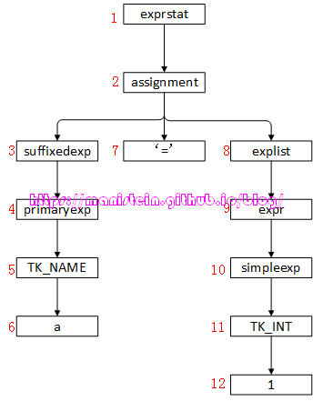
图7通过Parse Tree，我们既能解构代码的语法结构，也能确定其编译过程中的执行顺序，我们前面也介绍过，一般的多趟编译器(multi pass compiler)，编译器前端要生成中间表示（IR），然后经过优化器优化，再交给编译器后端去生成对应平台的机器码。一般意义来说，Parse Tree虽然也可以作为IR使用，但是它包含太多不必要的信息，也不利于我们去生成三址代码形式的IR(three-address code，该种形式相比于树形结构更容易转换成机器指令)，因此另一种形式的树，更易于我们去生成three-address code，它就是抽象语法树–Abstract Syntax Tree，简称AST[6]。AST在维基百科中的解释是：
In computer science, an abstract syntax tree (AST), or just syntax tree, is a tree representation of the abstract syntactic structure of source code written in a programming language. Each node of the tree denotes a construct occurring in the source code.
简单的来说AST是源码的抽象树形结构，它的每个节点都是源码中的某个构造。与Parse Tree不同，Parse Tree会事无巨细地将源码的语法结构，完整地展露出来，一个标点符号都不会放过，而AST则不同，它会省略掉一些无关紧要的信息，比如一些符号’(‘、’)‘、’,‘、’;‘、’{‘、’}‘等等，它只关注执行什么指令，以及什么指令先执行，什么指令后执行。比如上面例子的AST则如图8所示：
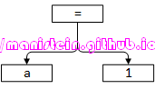
图8上图的含义是执行赋值操作，将1赋值给a，如果我们的AST执行后序遍历的方式，那么它的逻辑执行顺序就非常清晰了，比如a=1+2*3，得到如下的结果：
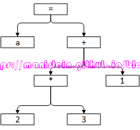
图9 lua的编译器是典型的单趟编译(one pass compile)，没有显示地生成任何形式的IR，包括Parse Tree或者是AST，它所有的编译逻辑都是在Parser里执行，直接生成虚拟机指令，所以本系列，不会对AST着色过的的笔墨，后续将会结合一些实例，适当结合Parse Tree进行讲解。
dummylua的项目目录结构
本节我们来回顾一下dummylua的目录结构，并对不同的模块进行说明：
1 | + 3rd/ #引用的第三方库均放置在这里 |
我们编译器相关的部分，都放在compiler目录之下，其中lualexer.h|c是词法分析器相关，luaparser.h|c是语法分析器相关（编译流程处理），luacode.h|c则是生成虚拟机指令的库，而luaopcodes.h|c则是opcode定义的地方。
exprstat编译流程
现在，我们进入到exprstat编译流程的探讨之中了，实际上，这部分并不好写，我写了几版，都觉得不够清晰或者细节太多而删除重写，经过反复思索，确定了通过EBNF范式描述语法，然后代码只展示结构和主要流程，一些操作细节通过图的方式展现，这样有助于我们快速理解知识点和需要注意的事项，最后还是强烈建议读者结合代码一起阅读，这样才能真正做到理解。
exprstat的构造
我们前面也介绍过，statement是构成代码逻辑，最基础的单独单元，lua中同样有多种statement，比如ifstat、whilestat、forstat等等，每个statement执行不同的逻辑，并且在编译器中有独立的处理逻辑分支，而每个statement中，头一个token决定了我们应该进入哪个处理分支之中。我们现在以官方lua源码的statement逻辑来举例：
1 | // lua-5.3.5 lparser.c |
代码片段1
在代码片段1中，ls->t.token就是我们获得的，在一个statement语句中的首个token，我们可以很容易地看到，首个token决定了我们要进入哪个case中，执行哪个编译流程。在就dummylua目前的完成情况来说，当前只实现了exprstat部分的逻辑，下面节取自dummylua的代码：
1 | // luaparser.c |
代码片段2
可以看到，如果输入的chunk(一个lua文件里的所有代码，或者在交互模式下的一行代码称之为chunk[7])，不符合exprstat的语法结构，那么将抛出语法错误。我们现在通过一张图来看一下什么样的chunk，可以进入到exprstat之中：
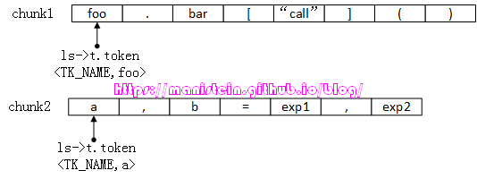
图10可以看到，上面两个chunk对应了两个statement(我们前面提到过funccall由于在suffixedexp内定义，因此是个exp，而在有些说法里，expr也是statement，在这里的情况，chunk1本质就是一个statement[8])，而这些statement中，的首个token是TK_NAME类型的，因此直接进入到exprstat的编译流程之中，图10也展示了exprstat的两种形态，一种是funccall，还有一种则是赋值。
说到这里，就要引入exprstat的EBNF描述了，它描述了exprstat的语法结构，并且EBNF范式与递归下降的逻辑实现，能够很好地对应起来。
1 | exprstat ::= funccall | assignment |
这里清晰地展示了，exprstat主要的两种形态，我们exprstat的代码，则如下所示：
1 | // luaparser.c |
代码片段3
上面的代码，与前面exprstat的EBNF范式基本吻合，这里希望读者仔细观察一下。但是上面的方式有点让人疑惑，就是赋值语句中，等号左边的必然是变量，而不能是函数调用，上面的EBNF范式清晰地暗示了，suffixedexp既能是一个变量，也能是一个函数调用。这似乎并不符合我们的直观直觉，实际上下面的定义，似乎更直观：
1 | exprstat ::= funccall | assignment |
相对应的，它的伪代码如下所示，更符合我们的直觉：
1 | void exprstat() { |
代码片段4
多么nice的逻辑。但是，很快我们就要遇到一个现实的问题，那就是，我怎么知道当前的这个statement是funccall还是assignment？如图10所示，我们进入exprstat逻辑分支的时候，当前的token是一个TK_NAME类型的，同时，也正如图10所示，不管是funccall还是assignment，他们的首个token都是TK_NAME类型，而刚进入exprstat这段逻辑时，我们只有statement中首个token的信息，单靠这个信息我们无法判定这个是funccall还是assignment。因此lua采取的方式就是，不管怎样，先把第一个exp识别出来，如果它是个变量，那么就必须当做赋值语句处理，如果是个funccall，那么处理直接结束。回到代码片段3的逻辑，exprstat的逻辑是，不管三七二十一，先把expr识别出来再说，而做这件事情的则如576行代码所示，通过suffixedexp函数来识别。但是在开始讨论suffixedexp的编译流程之前，我们首先要看看expr的处理。
expr的构造与编译
1、simpleexp的识别与处理
expr是expression的缩写，意为表达式，在lua的语法分析器中，它的作用就是将表达式识别出来，并将对应的信息存储到一个中间的结构之中。为什么要先从它开始讨论呢？因为它是组成statement的基础，我们先来看一下它的EBNF范式：
1 | expr ::= (simpleexp | unop expr) {binop expr} |
前面我们也介绍过，expr最终的归宿就是计算成一个确切的值，这个确切的值是什么意思呢？就是expr最后可以演变成simpleexp中，除了…和suffixedexp以外的任意一种类型的值，这些值实际上就是lua的基本类型的值。从上面的EBNF范式来看，它以simpleexp或者一个单目运算的exp为开头，后面可能跟一堆双目运算操作，但不论如何，最终的结果都是演变为一个lua基本类型的值。expr的逻辑如下所示：
1 | // luaparser.c |
代码片段5
我们先从最简单的情况开始讨论，先从一张图来大致看一下expr到底做了什么事情：
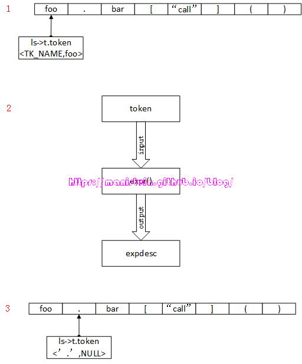
图11如图11所示，expr函数，会将我们输入的token，转化为一个被称之为expdesc结构变量的信息之中，在完成转化之后，我们获取下一个token。实际上expr可能会处理多个token，一般在单目运算或者是双目运算的expr里，目前我们只来看最简单的情况–只对单个token进行处理的情况。
实际上，并非所有的token都能够被expr函数转化为expdesc的信息的，只有那些是exp的token才行，这些token都被定义在了EBNF范式中的simpleexp里，他们是TK_FLT、TK_INT、TK_STRING、TK_NIL、TK_TRUE、TK_FALSE、TK_FUNCTION、’{}‘、TK_NAME等，除了TK_NAME，其他都能在lua中找到对应的基本类型（因为TK_NAME表示变量，可以存储任意一种基本类型的值）。这些是输入信息的部分，现在我们来看一下经过expr转化，得到的数据结构是怎样的，以下是它的定义：
1 | // luaparser.h |
我们现在通过一个表格，来看一下这些exp是如何转化成expdesc结构变量的：
| simpleexp | expdesc |
|---|---|
| TK_FLT | e->k=VFLT e->u.r = float_value |
| TK_INT | e->k=VINT e->u.i = int_value |
| TK_STRING | e->k=VK e->u.info = index_in_k（常量表k的索引值） |
| TK_NIL | e->k=VNIL |
| TK_TRUE | e->k=VTRUE |
| TK_FALSE | e->k=VFALSE |
这里需要注意的是，常量表k中不止可以存字符串，还可以存数值类型的值，要通过expdesc表示数值类型，同样可以用类似字符串的方式去表示。那在什么情况下，数值类型要通过VK的方式展现呢？答案是生成指令的时候，比如生成OP_LOADK指令，这个指令要从常量表k中，load一个值到栈顶，我们首先要将数值存入常量表，然后再去索引它，用expdesc e来表示，就是e->k = VK, e->u.info = index_of_number_in_k，后面会详细讨论。对于TK_FUNCTION的情况，我将在下一章进行说明，而对于constructor的情况(也就是’{}‘)，expr会怎么处理呢？我们结合图12来进行说明：
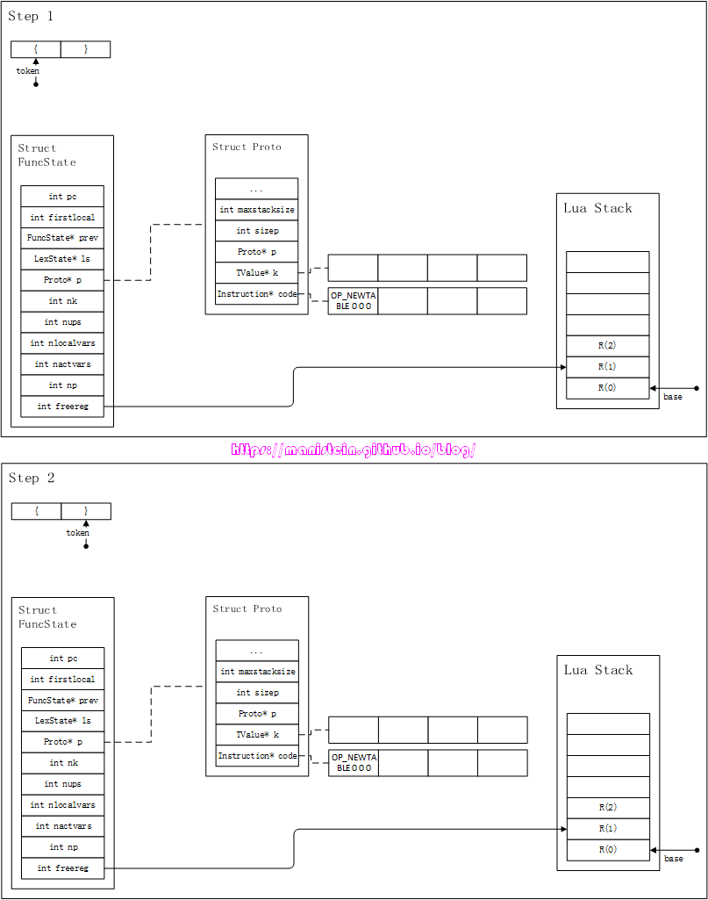
图12当我们的expr函数，检测到当前的token为’{‘时，会生成一个指令< OP_NEWTABLE 0 0 0 >，这里的含义是，在寄存器R(0)中创建一个table，同时它的array_size和hash_size都为0。此时，expdesc的值如下所示：
1 | e->k = VNONRELOC |
类型VNONRELOC表示，它的值在lua stack中，e->u.info则说明了它的值在栈中所在的位置。在图12的例子中，它在R(0)。我们知道，OP_NEWTABLE指令是iABC模式（指令的模式可以到luaopcodes.c里查找），在生成指令后，e->u.info的值，就是A域的值，因为指令操作的目标在R(A)，所以e所代表的值，就是刚刚被处理过的R(A)值，在本例中(它就是指明刚生成的table在栈中的位置)，不止OP_NEWTABLE是这样，其他指令也是这样。由于花括号内没有其他定义，因此expr会直接跳过’}‘，调用luaX_next获取下一个token。
接下来，要分析的则是expr函数如何处理类型为TK_NAME的token，TK_NAME其实是由primaryexp函数来处理的，而primaryexp又是suffixedexp的组成部分，但是suffixedexp又是simpleexp的组成部分，所以TK_NAME我们可以视为在expr内进行处理。现在我们来看一下这里的处理流程是怎样的。首先在开始讨论，expr如何处理TK_NAME之前，我们需要明确几个概念，首先是我们的代码中，函数与upvalue、FuncState结构的关系，现在我们通过图13的例子来进行分析：
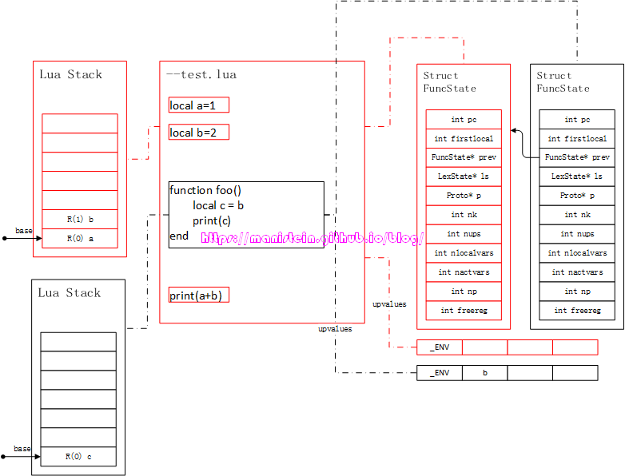
图13如上图所示，我们现在有一个test.lua的脚本，里面定义了两个local变量和一个函数，那么这个test.lua本身里面所有的代码就是一个chunk，这个chunk实际上也是一个function类型，我们称之为top-level function。test.lua脚本里，定义了一个foo函数，我们在编译的过程中，chunk因为也是一个function，因此会有一个FuncState结构和它对应，这个结构主要用来存储编译结果的，另外foo函数，因为也是一个函数，因此它也有一个FuncState结构和它对应，并且它的prev指针，指向了chunk的FuncState结构。每个函数都有一个upvalue列表，其中第一个upvalue必定是_ENV，它默认指向全局表，如果我们没有对_ENV进行任何赋值操作，那么它就是全局表的象征。每个函数在运行时，都有独立的虚拟栈，local变量会被放入栈中。这里的图，只是我用来方便讲解的图，实际上的布局并非真的完全如此。
图13帮助我们梳理了很多概念，我们现在可以根据图13来做一些逻辑分析了，同样是expr函数，当我们输入不同的token的时候，它会生成什么样的expdesc变量呢？现在来罗列一下这些在编译过程中的情况：
- 先到栈上找local变量，看看是否在local列表中，如果是则返回，此时e->k=VLOCAL，e->u.info为栈上的索引值
- 如果上一步找不到，则到自己函数的upvalue列表里去查找，如果找到，然后e->k=VUPVAL，e->u.info为upvalue列表里的索引值
- 如果上一步找不到，则到外层函数里查找它的local列表，如果找到，则将其添加到自己的upvalue列表中，如果找不到，则到外层函数的upvalue列表里查找，如果在那里找到，先添加到自己的upvalue列表中，再将e->k=VUPVAL，e->u.info为upvalue列表里的索引值。如果都没找到，则需要再到更外一层函数里查找，执行相似的逻辑，找不到就一直到外层函数找，直至到top-level function为止
- 如果还是找不到，就到_ENV表里查找，也就是upvalue[0]，也就是全局表_G里查找，此时e的值为e->k=VINDEXED，e->u.ind.vt=VUPVAL，e->u.ind.t=0，e->u.ind.idx=idx_of_name
结合图13，我们通过几个例子来看一下这个流程。
首先我们来看一下，编译foo函数时的情况。如果当前token为< TK_NAME, c >的情况，此时执行expr的逻辑，它首先会查找foo函数的local列表，它在第0个位置找到了变量c，因此生成expdesc结构，e->k=VLOCAL，e->u.info=0
然后我们来看一下，当前token为< TK_NAME, b >的情况，此时执行expr逻辑，因为在foo的local列表中找不到变量b，所以到外层函数中查找，并且在外层函数的local列表中，找到变量b，此时foo函数将其添加到自己的upvalue列表中，并且生成expdesc结构，此时e->k=VUPVAL，e->u.info=1
最后我们来看一下，当前token为< TK_NAME, print >时，expr的编译执行情况，首先到foo函数体的local列表中查找print，因为没有找到，所以到自己的upvalue中查找，发现也没找到。此时到外层函数的local列表中查找，因为没有找到，所以去外层函数的upvalue列表里查找，也没找到，最后只能去_ENV里查找。编译器会先将print这个字符串，加入到foo函数对应的Proto结构的常量表k中，然后将e->k=VINDEXED，e->u.ind.vt=VUPVAL，e->u.ind.t=0，e->u.ind.idx=258(假设print在常量表第3个位置)。这个expdesc的含义是，因为e->k为VINDEXED，所以这是一个从一个table取值的处理，而且e->u.ind.vt为VUPVAL，所以这个被操作的表，要去upvalue表去查找，又因为e->u.ind.t为0，所以操作目标是UpValue[0]，最后idx为258，则是去常量表里找到访问table的key值。
我们在获得了expdesc结构以后，最终是要将这些信息转化为指令的，那么这个转化的过程是怎样的呢？我们现在来看一下：
- 当expdesc类型变量e->k为VNIL时，生成< OP_LOADNIL A B >指令，该指令会被写入code指令列表中，其中A为lua栈中，这个nil值要被写入的位置，B的值表示从A指向的位置开始，要将多少个栈上的变量变为NIL值，同时将e->k设置为VNONRELOC，将e->u.info设置为A值
- 当expdesc类型变量e->k为VFLT、VINT时，先将e包含的lua_Number或lua_Integer值存入常量表k，然后生成< OP_LOADK A Bx >，该指令会被写入code列表，其中A为lua栈中，这个常量要被写入的寄存器位置，Bx是刚被写入常量表k的数值的k表索引
- 当expdesc类型变量e->k为VTRUE、VFALSE时，直接生成< OP_LOADBOOL A, 1, 0 >或< OP_LOADBOOL, A, 0, 0 >表示分别将1或0的值，读入lua栈A值所指的位置，第三个参数为0表示pc寄存器不自增，这个值将在比较运算指令生成时用到。此时e->k设置为VNONRELOC，并且e->u.info设置为A的值
- 当expdesc类型变量e->k为VINDEXED时，如果e->u.ind.vt为VLOCAL则生成< OP_GETTABLE A, B, C >指令，意思是将R(B)[RK( C )]的值，赋值到R(A)上，RK我们之前也讨论过，当C>=256时，RK( C )=Kst(C-256)，即从常量表k中取C-256这个值。当C<256时，取R( C )的值，即从寄存器中取值；如果e->u.ind.vt为VUPVAL时，则生成< OP_GETTABUP A, B, C >指令，意思是将UpValue[B][RK( C )]的值，赋值到R(A)上。此时e->k设置为VNONRELOC，并且e->u.info设置为A的值
- 当expdesc类型变量e->k为VCALL时，直接生成< OP_CALL A, B, C >指令，其中A表示要被调用的函数的寄存器位置。当B>0时，参数个数为B-1个，当B=0时，表示从R(A+1)到栈顶都是参数。当C>0时，C-1表示返回值的个数，当C=0时，表示返回值是从R(A)到栈顶
- 当expdesc类型变量e->k为VLOCAL时，表示目标已经在栈中，因此直接将e->k改为VNONRELOC
- 当expdesc类型变量e->k为VUPVAL时，生成指令< OP_GETUPVAL A, B >，这个表示R(A)=UpValue[B]，此时e->k设置为VNONRELOC，并且e->u.info设置为A的值
- 当expdesc类型变量e->k为VK时，生成指令< OP_LOADK A, Bx >表示R(A)=Kst(Bx)，此时e->k设置为VNONRELOC，并且e->u.info设置为A的值
- 当expdesc类型变量e->k为VRELOCATE时，这个表示指令已经生成，只是寄存器A未指定，此时需要将一个空闲的寄存器位置赋值给A域即可，一般由freereg指定
- 当expdesc类型变量e->k为VNONRELOC时，生成指令< OP_MOVE A, B >即是，R(A)=R(B)，要生成这个指令，A不能等于B
等下我会用一些例子来展示这个转化的流程，这个转换的功能一般是使用luaK_exp2nextreg函数来实现。
2、单目运算操作
回顾一下代码片段5，我们的expr函数，最终是调用了subexpr函数，其最后一个参数是指定当前运算符的优先级的，在subexpr函数内部，处理完一个exp以后，如果紧随其后的操作符优先级高于exp前面的，那么后面的操作要优先处理。接下来，我们来讨论一下单目运算的情况。什么是单目运算呢？就是exp前面有-、#、~和not操作的时候。我们现在分情况来讨论。
第一种情况就是expr前面有’-‘的情况。我们接下来看一下几个例子：
1 | -100 |
’-‘操作符之后，应该跟数值类型，否则这就是一个无效的exp，应当抛出Syntax Error。不过这里需要注意的是，token ’-‘后面，如果跟TK_NAME类型的token，那么在编译阶段，是不会检查该token是否是数值类型，它只会到虚拟机运行阶段的时候去检查。我们先来看一下，token ‘-‘后面紧跟的是一个数值token的情况，我们可以结合图14的情况来看，以下逻辑流程均发生在expr函数内:
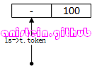
图14现在假设有如图14的表达式要经过expr函数处理，首先expr函数，会先检查当前的token，是否是’-‘，如果是，将操作符’-‘存到一个变量中，并且进入到单目运算处理流程，然后调用luaX_next函数，获取下一个token，此时得到图15的情况：
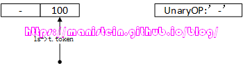
图15图15的结果，就是代码片段5中，第365行代码执行的结果，在完成操作符识别以后，要识别和处理紧随操作符的token < TK_INT, 100 >，此时subexpr函数递归调用了自己，目的是识别和处理这个token，并将其转化为一个expdesc结构。得到图16的结果：
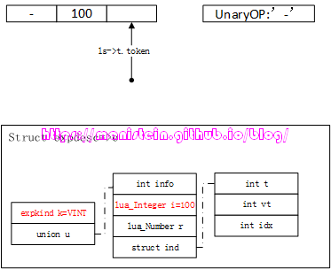
图16我们可以观察到，token指针又前进了一步，每个simpleexp处理完以后，就会将当前token的值，设置为下一个token的。再次回顾代码片段5，此时第370行要对unopr和expdesc变量，进行整合，于是得到图17的效果：
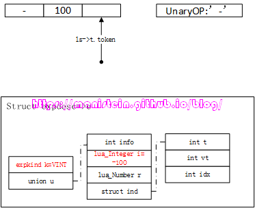
图17我们可以观察到，实际上，这里是对常量进行处理，面对数值常量，’-‘运算符操作，是将结果直接算好，并存入expdesc结构的，读者可以将任何其他数值类型的值带入，也是这样的操作流程。不过当token ‘-‘后面紧跟的token是TK_NAME类型的话，会怎么处理呢？首先，和刚刚讨论过的例子一样，expr函数首先要识别的是unopr是否存在，如果存在，那么识别单目操作符后面的那个exp，我们前面在讨论simpleexp的时候也讨论过，对于expr函数处理TK_NAME类型的token，最后生成的expdesc结构有几种形态，我们将其整理成表格如下所示：
| e->k | 使用的字段 | 说明 |
|---|---|---|
| VLOCAL | e->u.info | 表示值在栈中，R(e->u.info) |
| VUPVAL | e->u.info | 表示值在upvalues中，UpValue[e->u.info] |
| VINDEXED | e->u.ind.vt = VUPVAL e->u.ind.t e->u.ind.idx | 表示值在UpValue[e->u.ind.t][RK(e->u.ind.idx)] |
上面这个表格中，使用字段那一列，没有赋值运算的，代表值是可以变动的，有赋值运算的则代表值一定是固定的。我们现在来看一下-a的例子，假设现在已经完成了操作符和操作符后面的exp识别，得到图18的情况：
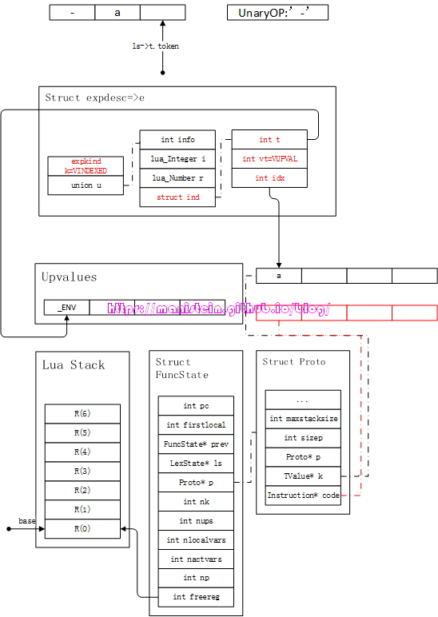
图18此时要将unopr和expdesc结构整合，那么就要生成OP_UNM指令了，在生成这个指令之前，首先要将如图18里，expdesc结构的，转化为指令，转换的流程，前面也已经讨论过，这里就是直接生成OP_GETTABUP指令，生成结果如图19所示：
图19
我们可以看到，生成OP_GETTABUP的指令过程中，将指令的A域赋值为freereg原来指向的值，尔后freereg自增1，然后expdesc改变对应的值，读者可以仔细查看图19。现在我们要生成一个新的指令OP_UNM，这个指令的意思是，将目标对象的值取负。我们此时要生成的指令为，其中A的值为上一条指令OP_GETTABUP的A域，而B的值则由图19中的expdesc来指定，于是有：
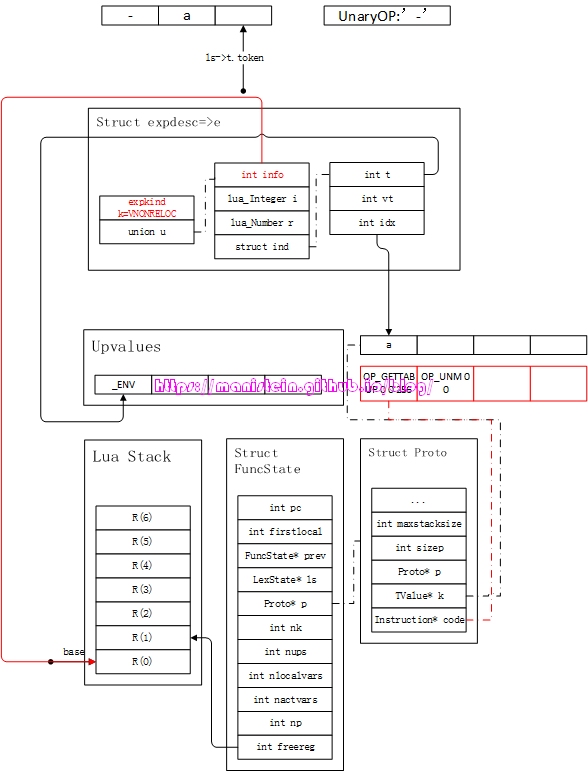
图20我们可以看到，当expdesc的类型为VNONRELOC时，e->u.info指向刚刚生成那条指令的操作目标。现在我们完成了UNM操作的论述了，后面我们将继续讨论其他单目运算操作。
我们现在要论述的第二种情况，则是expr前面是’#‘的情况，一般来说，这个指令是用来计算字符串或者table的长度的，这些对象，首先要先被加载到栈中，也就是说，首先要生成创建指定对象、或者将指定对象加载到栈中的指令，此时我们也会得到一个类型为VNONRELOC的expdesc结构，然后根据这个expdesc结构，生成指令，其中A的值由freereg指定，而B的值则是e->u.info（也就是上一条指令的操作目标）。其实整个流程和前面讨论过的流程类似，读者可以自行将这个流程分析一次。
接下来要论述的第三种情况，则是expr前面是’~‘的情况，这种操作符，其实和’-‘几乎一样，只是操作的对象应当是int型。读者可以结合前面的例子再次分析一次，只是这里要生成的指令是OP_BNOT，而不是OP_UNM。
我们要讨论的第四种情况是，expr前面是’not’的情况。在lua中，除了nil和false是表示false以外，其他的都表示为true。第四种情况的表现形式如下所示：
1 | not exp |
我在前面已经详细讨论过了，exp如何通过expr函数转化为expdesc的流程，现在要看的，则是如何将not操作和这个expdesc整合起来。我们则通过图21来展示这个流程：
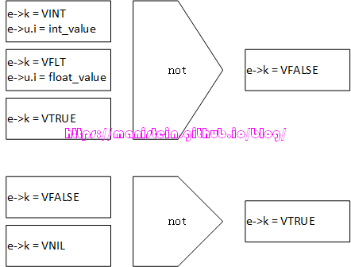
图21上图展示了expdesc为常量时，与not操作符整合的结果，其实就是修正原来的expdesc结构为VFALSE或者为VTRUE。对于not后面的exp为变量的情况，处理流程和’-‘一样，只是最终生成的指令从OP_UNM到OP_NOT。
在我们的虚拟机指令之中（主要是iABC模式的指令），B域和C域的值要两种情况来看待，一种是小于256的情况，还有一种则是大于等于256的情况。为什么要这样处理呢？实际上这是lua对指令的一种优化，我们先复习一下lua虚拟机的指令编码格式：
1 | +--------+---------+---------+--------+--------+ |
当B域或者C域的值大于等于256的时候，说明他要去常量表k中取参数，即Kst(B-256)或者Kst(C-256)。如果小于256，则需要去lua栈上取参数。在一个函数调用的过程中，一个函数的lua stack的最大尺寸是255，它是由指令的A域决定的，因为它只有8个bit位。我们一个指令要从栈中访问数据，也是受这个条件限制，因为要取的数据，必然是前面执行的指令对栈进行操作的结果。如果没有大于或等于256，就去常量表找参数的规则，那么我们首先就得用OP_LOADK指令，将其先读入栈中，这样本来一条指令就能完成的事情，就可能需要两条甚至是三条。接下来还有一个问题，就是，是不是所有在常量表K中的常量，都能够被非OP_LOADK的指令直接获取呢？答案是不是，因为B域和C域都是9个bit为，最大值为512，因此，它能够直接从常量表k中找参数的范围就是0~255(一共512-256=256个)。
3、双目运算操作
现在我们进入到双目运算的讨论之中了，这里，我会把它分为几个部分：算术运算、逻辑运算和比较运算，最后会在此基础上讨论一下递归的情况。
我们先来看一下算术运算的部分，这里主要分为三种情况看待，分别是：两个常量操作、一个常量与一个变量操作和两个变量的操作。现在先来看一下两个常量相加的例子：
1 | 1+1 |
我们进入到expr函数以后，就会开始处理上面这个exp了，先来回顾一下expr函数的定义：
1 | static void expr(FuncState* fs, expdesc* e); |
首先最左边的1，会通过simpleexp函数来识别，获得图22的结果，此时调用luaX_next函数，获得下一个token：
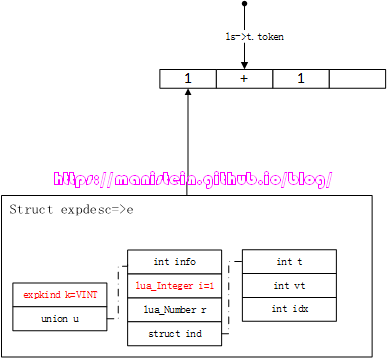
图22此时，当前token为操作符’+‘，所有的双目运算操作，在这个阶段，都要进入“中序”处理，在expr函数中，是通过调用luaK_infix函数来实现的，在算术运算中，首先判断操作符左边的exp，是否是数值类型，如果是则什么都不做，如果不是，则生成将exp入栈的指令。在本例中，由于1是数值类型，因此不作任何处理。这里需要注意的是，目前的expdesc结构变量e，就上上面expr函数定义里的参数e。此时，我们需要调用luaX_next函数，获得下一个token，而这个新的token，需要新的expdesc结构来存储，我们姑且称之为e2，经过处理得到如图23所示的结果：
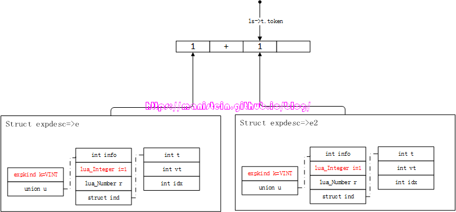
图23在完成了两个exp的装载之后，就要执行运算处理了，在expr函数中，这个处理我们称之为后序处理，就是要将e和e2进行运算处理，这里相当于将e和e2两个参数先入栈，再压入运算符。总之这个处理是在luaK_posfix函数内实现的。在本例中，因为e和e2都是常量，因此直接计算两个常量的结果，并将结果存入e中，这个e其实就是expr函数处理的结果，一直遵循我们前面讨论过的规则：
1 | tokens => expr function => expdesc |
此时，我们得到图24的结果：
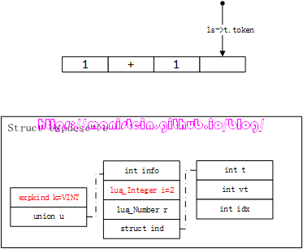
图24我们现在接下来看一下第二种情况，一个常量与一个变量相加的情况：
1 | 1+a |
我们先将操作符左边的exp转化成expdesc，得到图25的结果：
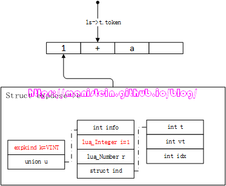
图25此时我们获得操作符，token ‘+‘，然后此时进入到“中序处理”流程之中，因为1这个exp是个数值类型，因此不需要做任何处理，此时获取下一个token < TK_NAME, a >，根据前面已经讨论过的内容，我们的变量a直接转化为expdesc结构，最终的结果如图26所示：
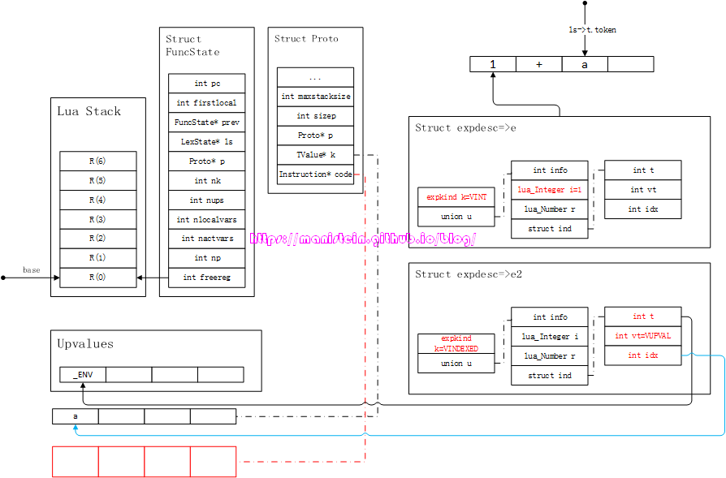
图26接着我们要用luaK_posfix函数来处理e和e2了，因为他们不全是常量，因此两个参数都要先生成入栈指令，如图27所示：
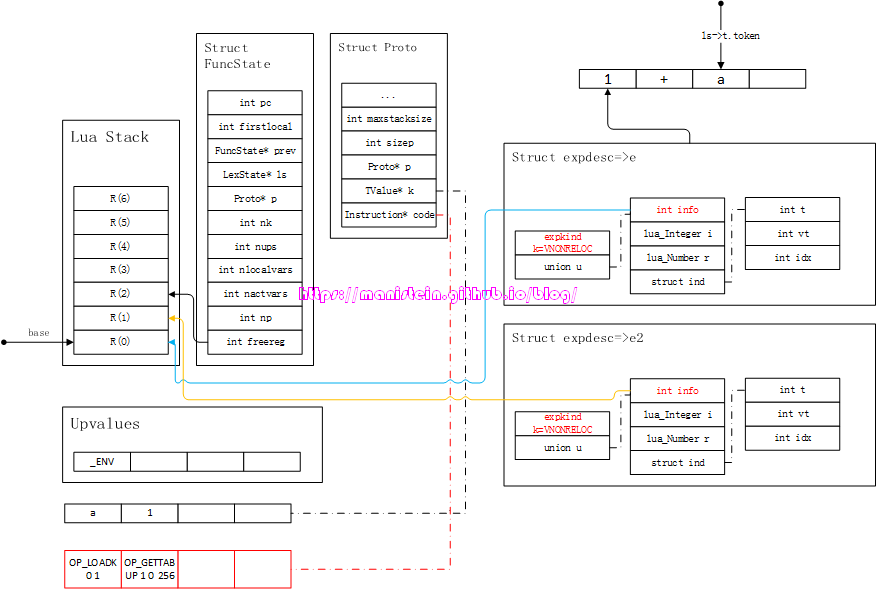
图27最后，需要将e和e2进行双目运算操作，生成相关的指令，如图28所示，这里要注意e和freereg的变化：
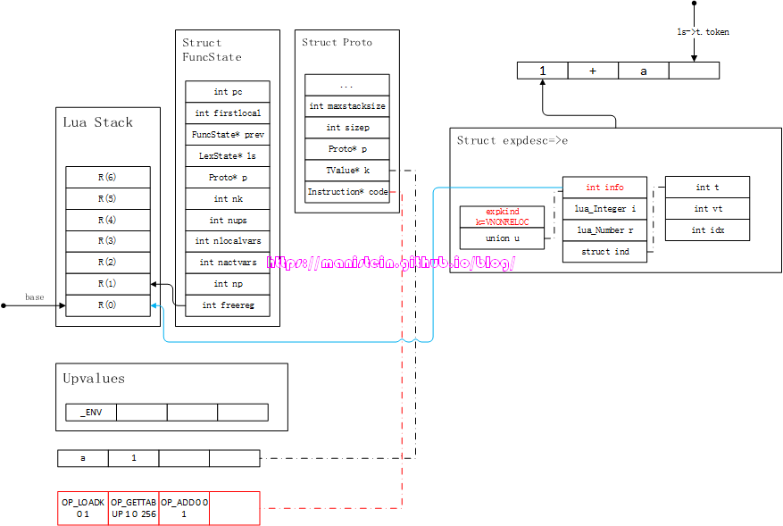
图28OP_ADD操作指令的操作结果，会存入寄存器R(0)，所有的参数入栈，最终的结果都是为了生成一个值，freereg则被复位到R(1)的位置，这里需要注意的是，freereg永远指向刚刚生成的那条指令，A域所对的R(A)寄存器的下一个寄存器。
现在我们来看一下，算术运算的最后一种讨论情况，两个变量操作的情况，我们现在来看一下下面一个例子：
1 | a + b |
首先，我们进入到expr函数以后，首先会通过simpleexp函数，来处理变量a，得到图29的效果：
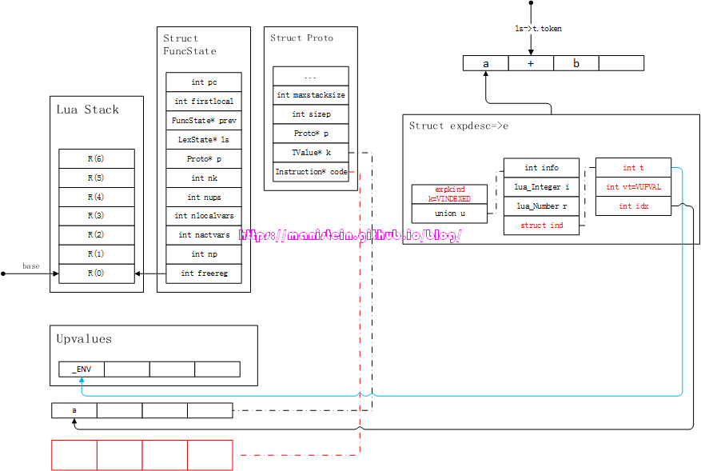
图29此时，我们遇到操作符，执行luaK_infix操作，因为e不是数值类型，因此要生成入栈指令，得到图30的结果：
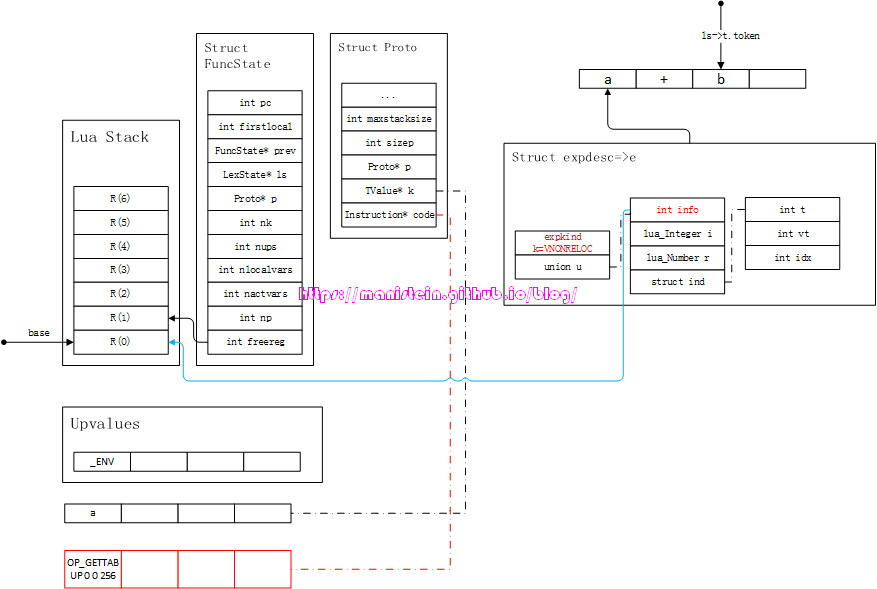
图30此时，进入到操作符右边的token的识别流程之中了，识别之后，直接装载到新的expdesc结构中，得到图31的结果：
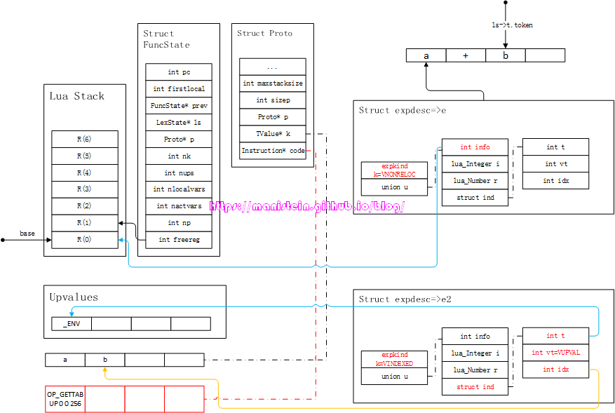
图31两个参数都被识别和装载之后，就进入到了luaK_posfix的执行流程了，此时会生成将第二个参数都入栈的指令，图32展示了这个结果：
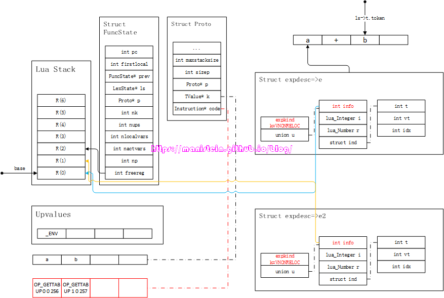
图32最后，生成对两个参数进行运算的指令，这里是OP_ADD指令，得到图33的结果：
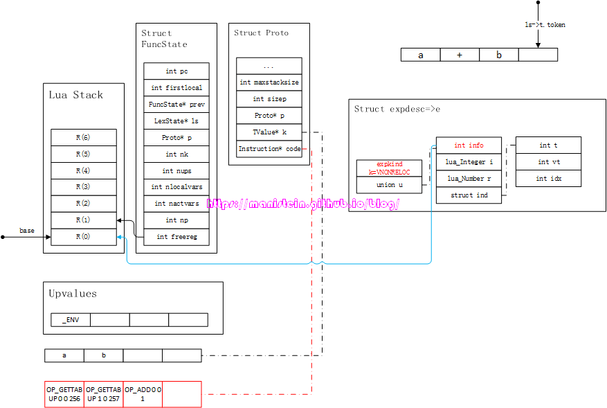
图33我们可以用任何一个双目算术运算符，代替上面几个例子中的加法运算符，操作流程都是一致的。而拼接字符串的CONCAT操作，可以结合第三种情况去分析，这个留给读者自己去推导流程。
4、逻辑运算
我们的逻辑运算，本质是and和or运算符执行逻辑运算，我们接下来通过几个例子来看。首先是一个and和or只有变量参与的例子，然后我们再参入常量，最后让and和or结合。我们首先来看第一个例子：
1 | a and b and c |
进入到expr函数以后，我们首先对token < TK_NAME, a >进行处理，处理它的是simpleexp函数，对应代码片段5的第372行。执行完以后，我们将该token的信息，装载到expdesc中，得到图34的结果：
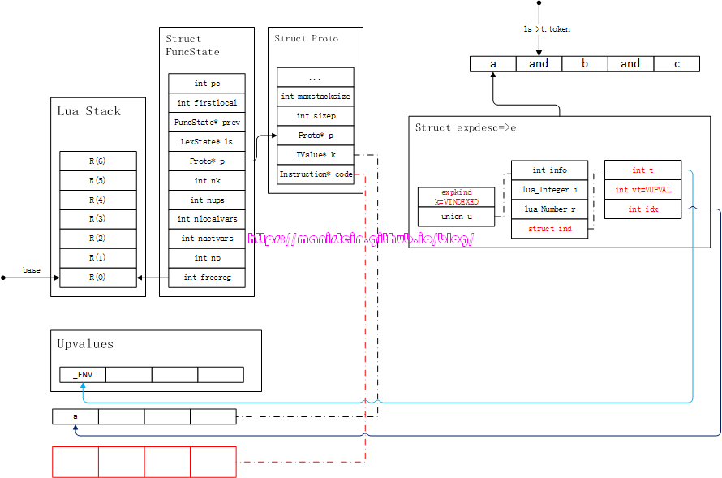
图34在完成了第一个exp的识别之后，调用luaX_next函数获得下一个token，我们获得操作符，token TK_AND，此时要进入“中序处理流程”，也就是代码片段5中的第380行代码luaK_infix函数的执行。luaK_infix函数在这种情况下会做什么呢？其运作流程如下所示：
- 将当前expdesc结构内的信息，转化为指令，一般是生成参数入栈的指令
- 生成OP_TESTSET指令
- 生成OP_JUMP指令
结合图34的情况，现在将expdesc结构转化为指令，就得到了图35的情况：
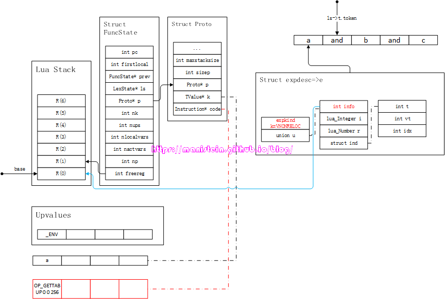
图35完成入栈指令生成之后，现在要生成的OP_TESTSET指令和OP_JUMP指令，得到图36的效果：
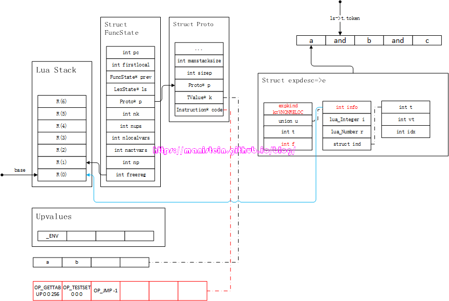
图36图36的信息量很大，首先我们生成了OP_TESTSET指令，目前的A域并不是最终值，在最后一个指令被处理完以后，它会被重置。这个指令的作用是判断R(B)和C是否相等，如果相等，则令R(A)=R(B)，否则PC++。PC++的含义是，跳过下一个指令，在图36的例子中，如果R(B)的值（也就是a的值）不与C值0相等，那么将R(A)赋值为a，此时下一条指令为OP_JMP。如果R(A)的值和C不相等，那么下一条指令，则是OP_JMP的下一条指令，也就是跳过了OP_JMP指令。含义就是如果a的值为false，后面的判断都不用做了，因为一定是false，我们直接把a所代表的false值记录下来就行了。第二个要注意的点是，expdesc结构的f值，指向了我们刚生成的OP_JMP指令，记录了这个位置，并且OP_JMP的参数为-1，这个值后续还要进行处理。
在完成了第一个and的处理之后，编译器通过luaX_next函数，获取下一个token < TK_NAME, b >，此时，将变量b装载到新的expdesc结构e2中，于是得到图37的结果：
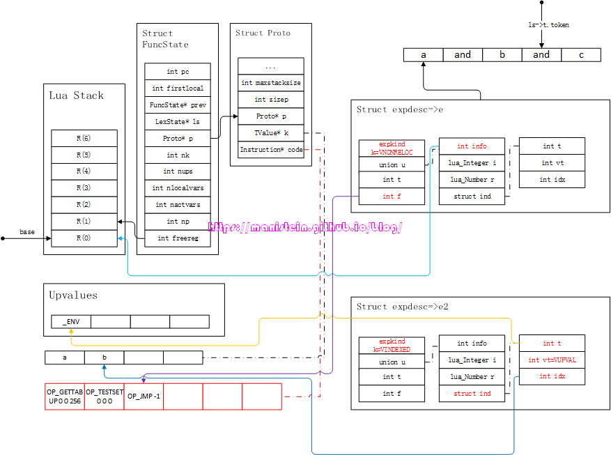
图37此时进入到了第二个and的处理流程，和前面的处理流程一样，首先e2的信息要转化为指令，然后生成OP_TESTSET和OP_JMP指令，得到图38的结果：
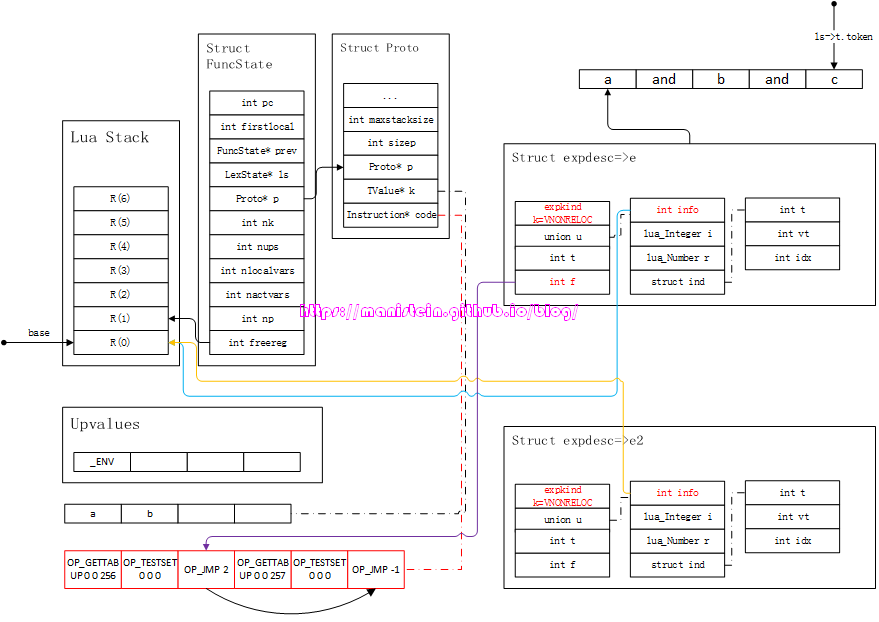
图38对b的处理，和对a是基本相似的，但是有一点需要注意的是，第一个OP_JMP指令，的-1值变为了2，我们前面已经知道了，e->f指向了第一个OP_JMP指令，这个f其实是一个false列表的意思，意思就是and逻辑运算中，有一个参数为false，那么就进入这个jump流程之中。在图38中，我们可以看到第一个JMP指令，的sBx的值为2，那么它的下一个JMP指令则是sBx+1。在完成这个处理之后，需要将e和e2合并，其实就是将e2中，除了f以外的值赋值给e。在完成了第二个and的处理流程之后，我们调用luaX_next函数，获得下一个token < TK_NAME, c >，得到图39的结果：
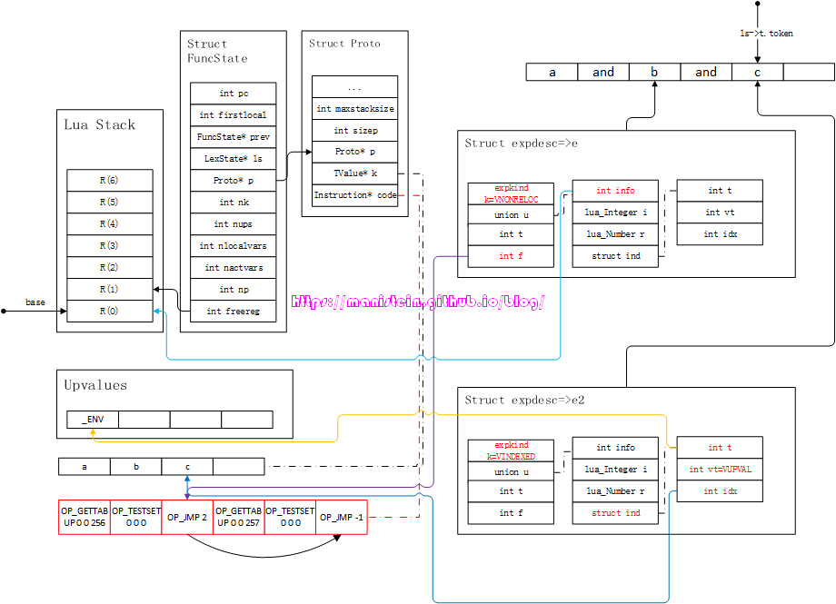
图39此时经过luaK_posfix函数，将e和e2合并，得到图40的结果：
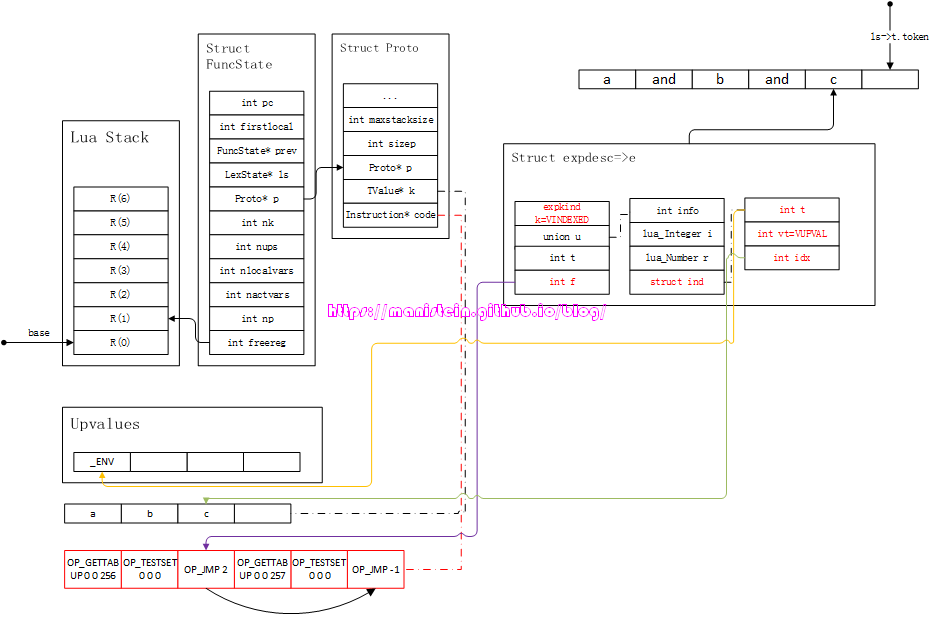
图40其实到目前为止，我们的expr函数的处理就结束了，就是输入一些token，经过expr函数处理，输出一个expdesc结构。但是为了本次讨论的完整性，我需要最后将expdesc结构转化为指令，实际上这一步可能是在assignment的赋值操作开始之前，或者在ifstat、forstat、whilestat等statement中的condition部分结束分析时进行处理的。那么，接下来，我们首先要将e中的信息，转化为指令得到图41的结果：
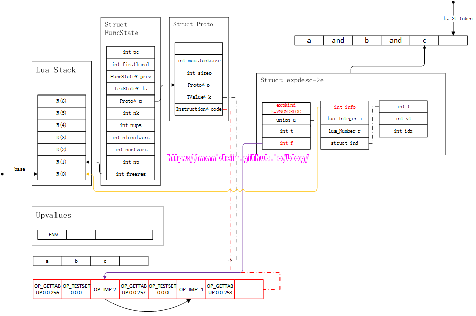
图41在完成这些处理之后，我们要根据e->f取得false列表，从第一个OP_JMP指令开始，修改它的参数，使其跳转到指令列表的第8个位置的那个指令。同时将OP_TESTSET指令的A域，设置为freereg-1的值，得到图42的结果：
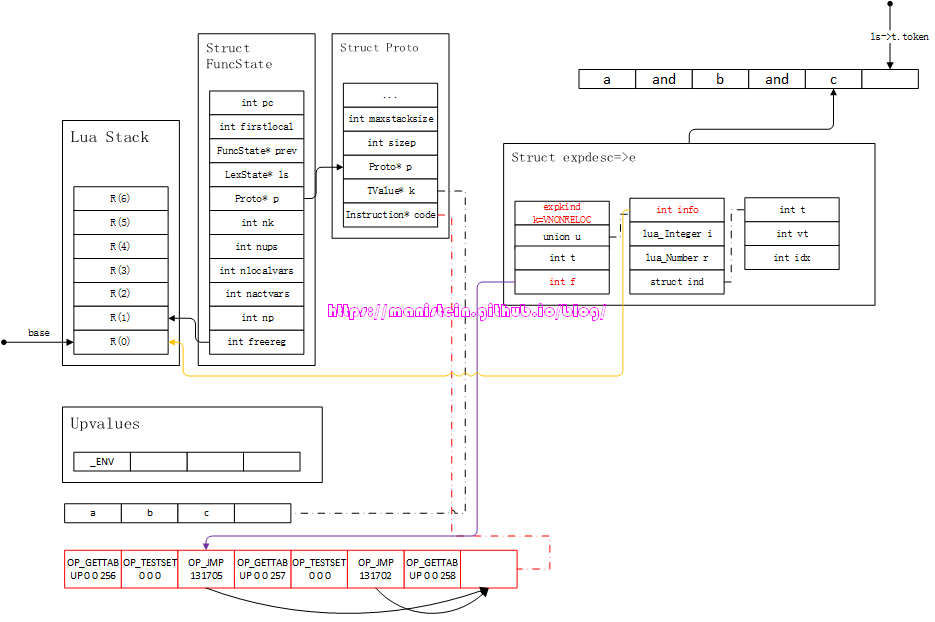
图42由于我们的sBx是18个bit位，而OP_JMP指令是iAsBx模式，jump指令可以往前跳转，因此sBx是允许负数存在的，又因为sBx在低位，无法通过最高位表示负数。sBx的最大值是262143，它向右移一位是131071，因此这个值则表示0值，小于它的都是负数，比如131700表示-1，这里的131705表示pc+4，又因为pc寄存器本身会自增，于是就相当于跳转到箭头所指的位置了。这里还需要注意的是，官方lua是会在这个阶段对OP_TESTSET指令进行优化的，将其优化为OP_TEST指令，由于dummylua只注重实现正确逻辑，性能还不是最优先考虑的因素，为了方便讲解和实现，dummylua并未对该指令进行任何优化。
我们现在拿上面的例子，来模拟执行一下，感受一下这一系列指令的运作流程，我将从三个例子切入，他们分别如下所示：
1 | a and b and c |
我们先看例1的情况，它的执行流程是怎样的呢？首先第一步，需要将变量a通过OP_GETTABUP指令，将变量a的值读入栈中，如图43所示：
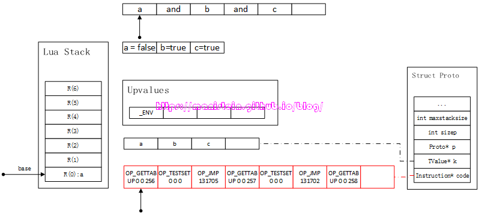
图43在将a值入栈之后，我们现在则需要对它进行测试，测试它的指令就是OP_TESTSET指令，此时，会将a的值和指令C域进行比较，比较代码是c语言，因此0代表false，非0代表true，这里因为a的值为false，因此重新将false的值设置到寄存器R(0)上，因为是a的值是false，所以这里会直接执行下一条指令，OP_JMP，最后跳过所有的TEST，如图44所示：
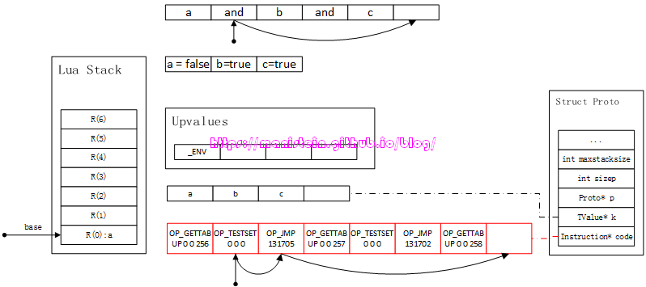
图44图中的曲线，就是测试通过后，直接跳过所有的测试指令，因为and逻辑中，只要有一个false，立马终止测试，跳过所有的测试指令。我们接下来看一下例2，它的运作流程如图45所示：
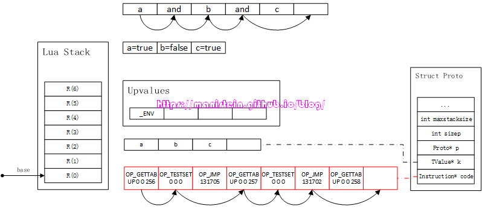
图45图45一口气把例2的逻辑执行了一遍，其流程总结如下所示：
- 先将a的值入栈，然后测试a的值是否为true，因为在例2中，a的值为true，因此PC寄存器会加1，所以跳到了下下个指令中
- 这个指令获取了b的值，并且放入寄存器R(0)中，然后使用OP_TESTSET指令，因为此时b的值为false，因此下一个指令为OP_JMP指令
- 最后一个OP_JMP指令直接跳过了最后一个OP_GETTABUP指令，此时我们and运算的最终的结果，就是b的值
接下来，我们来看一下例3的情况，得到图46的结果：
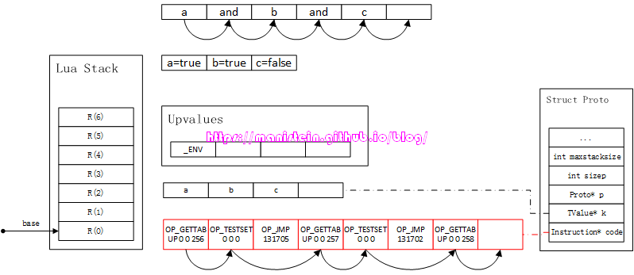
图46图46展示了例3的运作流程，与前面的没有很大的差别，这里需要注意的是，如果a和b的值都为true，那么决定这个and逻辑运算结果的是最后一个表达式的值。
我已经展示了and逻辑运算的流程，至于or的，只需要把OP_TESTSET指令的C域改成1，就是or的逻辑运算了，读者可以自己去推导。接下来，我们来看一下逻辑运算中，包含常量的情况。这里要分情况来讨论，当我们在纯粹的and逻辑处理流程过程中时，如果and操作符前面的exp，经过expr函数输出的expdesc结构是VK、VFLT、VINT或VTRUE类型时，它是被直接忽略掉的，也就是说不参与到指令生成。如图47所示的结果：
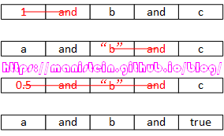
图47我们可以看到，除了最后一个exp，其他exp均在and操作符前面，他们在and逻辑运算中，如果处于and操作符之前，就可以直接被忽略，因为他们的值一定是true，所以直接跳到下一个TEST指令之中，这属于编译器的一种优化。如果and逻辑执行到最后一个exp，说明前面所有的exp都测试通过，因此最后一个exp的值决定了最后的结果，所以不能被忽略。
接下来，看一下or逻辑的情况，如果or操作符前面的exp，经过expr函数处理后，得到的expdesc结构是VNIL或VFALSE的类型时，它可以被忽略，如图48的情况：
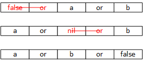
图48我们可以看到，除了最后一个exp是false或者nil，其他在or前面的exp，凡是这两个类型，都可以被忽略，因为在or逻辑处理中，只要exp的值是false就会进入下一个or操作的测试之中。去除了这些常量，我们就可以将余下的内容，套用到前面讨论过的流程之中了。
关于逻辑运算的处理，我们还有最后一种情况没有讨论，就是and和or结合的例子，我们现在来看一组例子，如下所示：
1 | a and b and c or d |
面对这样的情况，我们可以接着图40的情况，往下讨论，假设现在我们已经处理了a and b and c的流程，现在我们将c变量的信息，装填到expdesc结构中，得到图49的结果：
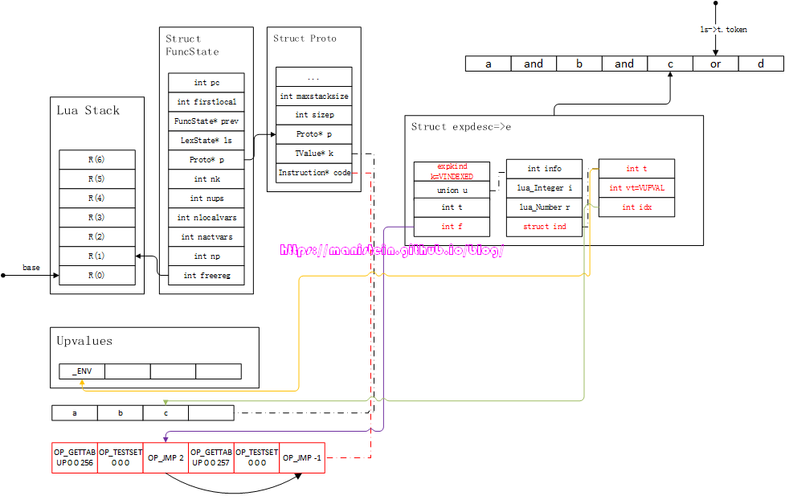
图49此时我们获得了操作符or，进入中序处理流程(调用luaK_infix函数)，这里首先将e中的信息，转化为虚拟机指令，于是得到图50的结果：
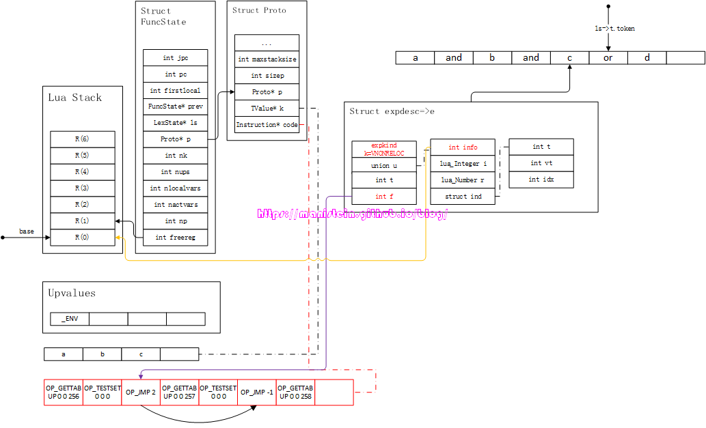
图50尔后，我们需要生成的是OP_TESTSET指令和OP_JMP指令，得到图51的结果：
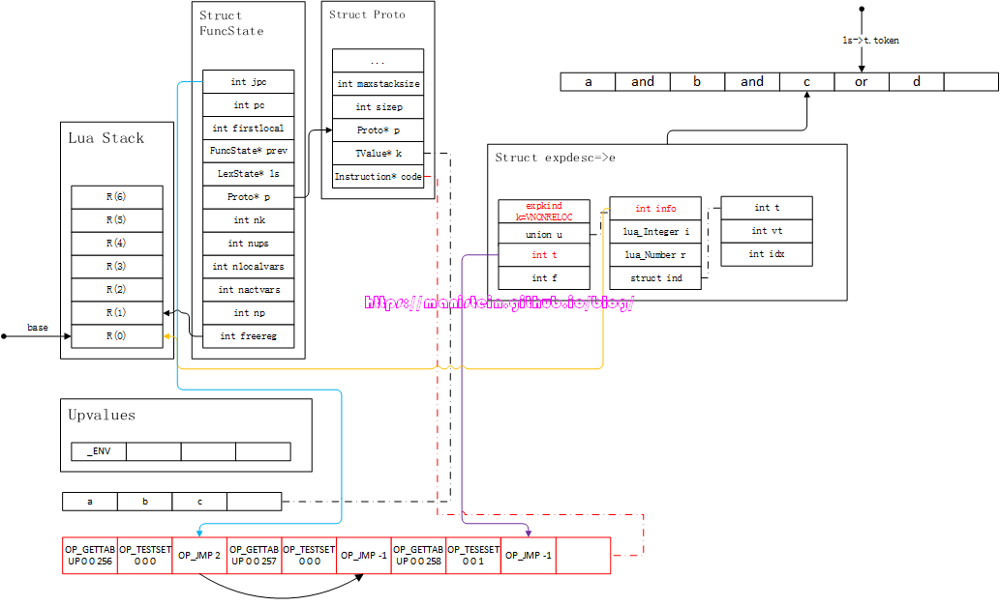
图51我们可以看到，e中原来代表false列表的字段就不使用了，取而代之的是e->t，这个表示为true时的列表，也就是说当变量值为true的时候，直接跳过所有测试。原来的false列表，并未被立即消费，而是转移到FuncState结构的jpc变量来暂存。此时，luaK_infix函数的处理就结束了，接下来使用luaK_next函数，来获得下一个token < TK_NAME, d >，此时需要把d的内容，装填到新的expdesc结构中，得到图52的结果：
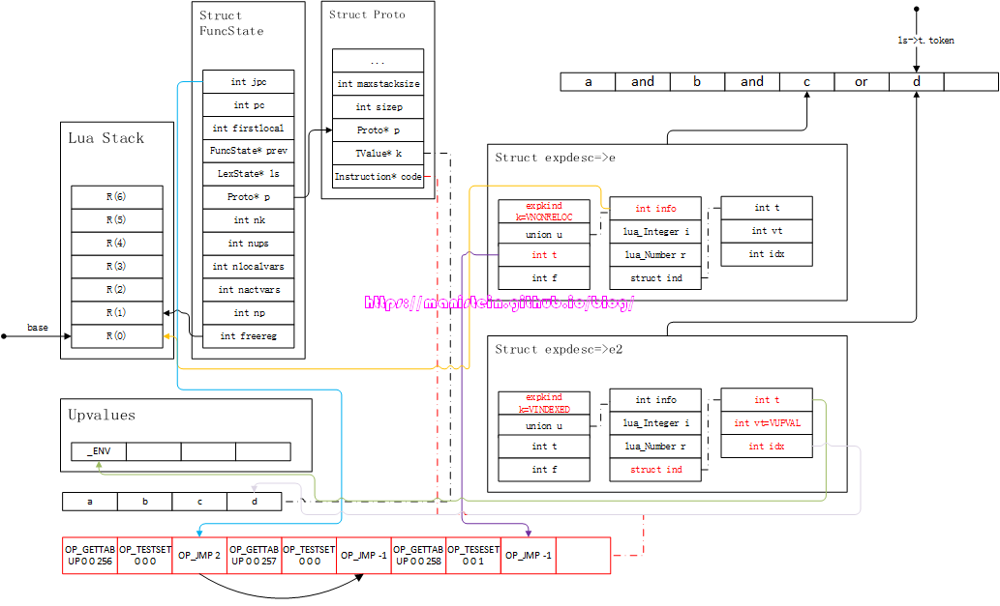
图52接下来就进入到luaK_posfix函数的处理之中了，在这种情况下，就是将e和e2的信息整合在一起，其实就是将t的值赋值给e2->t，最后用e2的值覆盖e的值，得到图53的结果：
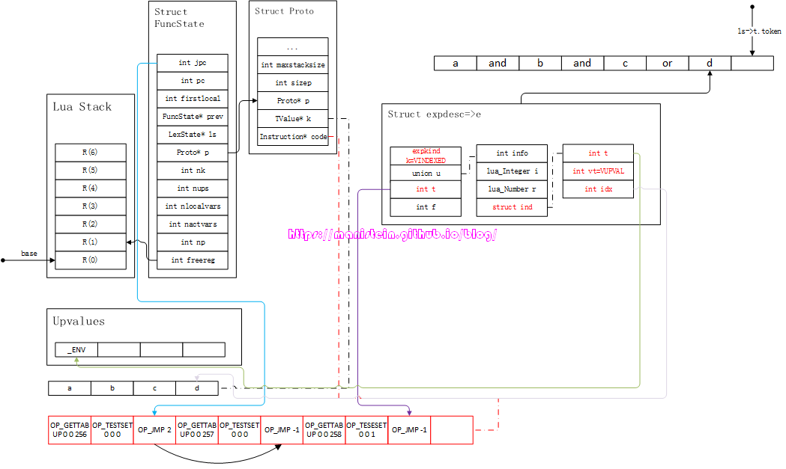
图53到了这一步，我们的expr函数的处理就成就算结束了。但是为了完整性，我们需要对expdesc中的信息，转化为指令，在赋值语句中，或者在ifstat、whilestat、forstat等的condition部分，我们需要将e转化为指令，于是得到图54的结果：
图54
从图54中的内容，我们可以看到，jpc所指向的jump指令列表的跳转索引，被改变了，直接指向了获取变量d到栈中的指令< OP_GETTABUP 0 0 259 >，这表示，当a、b的值为false时，直接跳转到d这里，以d的值作为表达式的结果。而e->t指向的JUMP指令，则指向了下下个指令，因为如果c为true，则不用理会d的具体值了。
这里展示了and和or的逻辑运算，至于or和and的结合，就留给读者自己去推导了，到目前为止，逻辑运算相关的论述就结束了，接下来我们将进入到比较运算的讨论之中。
5、比较运算
现在我们将进入比较运算的探索之中了，我们的比较运算包括了>、<、>=、<=、==、!=6种，但是我们用于比较运算的指令只有三个，分别是OP_EQ、OP_LT和OP_LE。我们通过==和!=两个实例，来看一下它的运作流程，其他的运算符编译流程，和这个差不多，因此不会再赘述，留给读者自己去推导，现在我们来看一下以下两个例子：
1 | a == b |
我们先来看一下a==b的例子，如图55所示：
图55
lua编译器，先通过simpleexp函数，去识别变量a，并且将变量a的结果装填到了expdesc的结构之中去了，此时调用luaX_next函数，获得下一个token，也就是操作符==，此时要对e和==号进行中序流程处理，而处理它们的函数则是luaK_infix函数，这个函数，在比较运算过程中，对操作符前的exp的处理是，将保存操作符前的那个exp信息的expdesc结构，转化为指令，因此得到图56的结果：
图56
接下来，expr函数会调用luaK_next函数，获取下一个token，得到< TK_NAME, b >，此时我们需要一个新的expdesc结构，e2，并将b的信息装填到里面，于是得到图57的结果：
图57
此时我们获得了e和e2，接下来，就是要进行真正的比较指令生成了，这个操作是交给luaK_posfix函数来执行。首先要将e2的信息，转化为指令，于是得到图58的效果：
图58
然后整合e和e2，并且生成OP_EQ指令，OP_JMP指令和OP_LOADBOOL指令，如图59所示：
图59
我们需要关注几个地方，第一个是freereg被复位了，第二个是OP_EQ指令，如果测试失败，则跳过OP_JMP指令，进入第一个OP_LOADBOOL指令，然后将0值赋值到R(A)中，然后PC寄存器跳到蓝色箭头所指向的位置。如果测试成功，则下一个指令执行OP_JMP指令，然后PC寄存器跳转到黑色箭头指向的位置。我们现在先来看一下a==b成立的情况，它如图60所示：
图60
图中的黑色箭头，就是指令执行的顺序，现在我们来看另一种情况，当a==b不成立的情况，它如图61所示：
图61
黑色箭头是指令的执行顺序。对于不等于的情况，只需要将OP_EQ指令的A域由1变为0即可，其他的比较运算，读者可以根据前面的虚拟机指令说明，将其套入我们刚刚讨论过的指令生成流程之中，这个工作就交给读者自己去推演，这里不再赘述。
6、逻辑运算中包含比较运算的情况
我们前面已经讨论了逻辑运算和比较运算的情况，现在来讨论一下逻辑运算和比较运算结合的情况。这点非常重要，为什么说这点很重要呢？因为比较运算生成的虚拟机指令，和逻辑运算结合，会改变原有的一些参数，我将结合如下的例子，来论述这个流程：
1 | a == b and c and d |
和前面的流程一样，首先我们获得的第一个token是< TK_NAME, a >，然后此时要进入到expr函数的执行流程之中，expr函数首先要识别第一个token，这是一个simpleexp，因此，此时需要将变量a装填到expdesc结构之中，得到图62所示的情况：
图62
在完成a变量的expdesc装填之后，此时parser会调用luaX_next函数，获取下一个token TK_EQ，然后需要对刚刚装填好的expdesc结构变量，和这个操作符做一次“中序处理”，也就是通过luaK_infix函数来处理它们之间的关系。在这种情况下，编译器会将刚刚的expdesc信息，转化为指令，得到图63的结果：
图63
完成luaK_infix函数的调用之后，我们获得了下一个token < TK_NAME, b >，此时需要将b装填到新的expdesc结构之中，得到图64的结果：
图64
在获得了e和e2两个结构之后，我们需要对它们进行后缀表达式来计算，操作符是==，此时需要将e2也转化成虚拟机指令，于是得到图65的结果：
图65
现在的情况是，两个操作数已经入栈，然后需要根据操作符进行后缀表达式运算，我们当前的操作符是==，此时生成OP_EQ和OP_JMP指令，如图66所示：
图66
我们现在获得了新的token，TK_AND，前面经过比较运算得到的结果，存储到了expdesc结构之中，现在要对这个结构中的信息，和TK_AND操作符进行整合处理，处理它的函数是luaK_infix函数，此时，我们需要将e->info的信息，赋值给e->f，并且修改OP_EQ指令的A域。得到图67的结果：
图67
接下来，lua parser会调用luaX_next函数，获得下一个token < TK_NAME, c >，并且将token装填到新的expdesc结构之，得到图68的结果：
图68
此时我们获得了e和e2，现在要对他们进行后缀表达式处理，处理函数是luaK_posifx，而操作符是第一个and，于是有图69的结果：
图69
接下来，要对e进行和第二个and操作符的整合处理，这个处理由luaK_infix函数实现，此时，会将e中的信息，转化为指令，得到图70的结果：
图70
完成luaK_infix处理之后，parser会调用luaX_next函数，获取下一个token < TK_NAME, d >，然后将其装载到新的expdesc结构e2中，得到图71的结果：
图71
接下来又到了，整合e和e2的流程了，完成整合之后，我们得到图72的结果：
图72
到这一步，我们的expr函数的处理就完成了，但是为了讨论的完整性，这里要将expdesc结构内的信息，转化为指令，于是得到如图73的结果：
图73
到这里为止，逻辑运算包含比较运算的情况，我就完成了论述了，当然还有or的情况，还有其他更复杂的组合，不过相信读者通过读懂上面这个例子，能够举一反三，自行推导。最后我通过展示a==b为true或false，c和d都为true的情况，来展示一下指令的执行流程，其他的情况由读者自己推导。
图74
a==b为true的情况。
图75
a==b为false的情况。
7、constructor处理
这一部分，实际上就是对一个table进行编译，实际上，这个操作也并不复杂，现在通过一个例子来说明：
1 | { a, b, c = 10, d } |
我们从图75-2开始，直至完整展现编译流程。
图75-2
当lua编译器，遇到{的时候，直接生成OP_NEWTABLE指令，图75-2中的A域是0，表示生成的table放置在R(A)也就是R(0)上。B域和C域均为0，表示它的arraysize和hashsize都是0，现在是个空表。然后我们进入下一个操作之中。
图75-3
回顾一下图6，在constructor内部的处理流程之中，只有单个simpleexp的，则是listfield，这种exp需要直接生成入栈指令，稍后一并处理。接下来，我们获得的token则是’,‘，这里直接跳过，直接获取下一个token < TK_NAME, b >，此时生成新的指令，如图75-4所示：
图75-4
此时，直接跳过’,‘，处理下一个field，得到图75-5的结果：
图75-5
这里对c=10生成了OP_SETTABLE指令，这里并没有生成入栈指令，而是直接赋值。然后我们进入到最后一个filed的处理之中，也就是将d生成入栈指令，得到图75-6的结果：
图75-6
最后，我们需要将已经入栈的参数，设置到table里，这些在栈中的变量，会被设置到table的array域中，于是得到图75-7的结果：
图75-7
最后这里生成了一个OP_SETLIST指令，它的A、B和C域的值分别是0、3和1，A域指明了table在栈中的位置，B域说明了从R(A+1)开始，一共有多少个栈上的变量，要被设置到table的array中。我们现在来回顾一下，OP_SETLIST的含义：
1 | OP_SETLIST A B C R(A)[(C-1)*FPF+i] := R(A+i), 1 <= i <= B |
A域指向了操作目标，B域指明了从R(A+1)开始，一共有多少个栈上的变量，要被设置到R(A)的array列表中，C域指明了它的array区间，FPF指明了，一次通过OP_SETLIST指令，设置到table array列表中的最大批次，默认是50。举个例子，比如我们现在有一个table，现在有100个变量，要被设置到array中，那么这里需要生成两个OP_SETLIST指令，假设目标table在R(0)，那么第一个OP_SETLIST指令则是< OP_SETLIST 0 50 1 >表示设置到1~50的位置上，第二个OP_SETLIST指令则是< OP_SETLIST 0 50 2 >表示设置到51~100的位置上。
这里需要注意的是，在constructor内，有赋值操作的域，是直接生成赋值指令，将对应的值设置到目标表里，其他的均是列表域，因此都需要通过压入栈，再使用OP_SETLIST指令，来将这些变量设置到table上。
8、优先级处理
接下来我们要讨论的是，优先级处理的情况。优先级的处理，主要有运算符优先级，还有就是表达式优先级。我们先看一下运算符优先级的情况，实际上lua语言对运算符的优先级，有进行分级，其分级如下所示：
1 | // luaparser.c |
代码片段6
我们这里的运算符优先级，是双目运算符的优先级，一个双目运算符有两个操作数，分别是左操作数和右操作数，上面花括号内的数字，分别代表左操作数和右操作数的权重，比如下面一个例子：
1 | a + b |
到代码片段6中，查找加法运算符的权重，得到的值，附属到了变量a和b的下方。如果出现一连串的算数运算，比如下面的例子：
1 | 10 10 |
代码上方的是加法运算的操作数权重，代码下方的是乘法运算的操作数权重，根据这个权重，我们就可以判定，权重高的运算符要先运算。我们的编译器，怎么处理这样的流程的呢？通过图76来说明：
图76
图76展示了一个表达式，从例子中，我们可以看到，^运算符的优先级是最高的，然后是*运算符，最后是+运算符。上面这个表达式，最终会经过expr函数，计算得到一个expdesc结构的结果，但是在这个expr函数内部，还是会将表达式分解成若干个表达式，并且通过递归的方式，调用expr函数来编译他们，整个分解过程，就是我们看到的图76的结果。通过图76，我们可以得到几个结论，在一个包含运算符的表达式中，运算符的优先级越高，其层次越深，计算的次序越靠前。我们可以通过先序遍历的方式，去遍历这个Parse Tree，当操作符右边的节点，要退出的时候，操作运算才生效。读者可以结合代码片段5和图76去体会一下，lua编译器对于运算符优先级的处理逻辑。
我们现在来看另一个例子，这个例子是表达式在括号内的情况，如图77所示：
图77
根据图77，我们可以看到，expr处理带有双目操作符的时候，操作符左边的exp一定是一个simpleexp，而simpleexp本身就要处理括号内的表达式的情况，并且simpleexp一定要优先处理。这样做的好处是，不管操作符的优先级有多高，括号内的表达式要优先完成运算。读者同样可以结合图77和代码片段5来感受这一点。
suffixedexp构造与编译
接下来，我们来看一下suffixedexp的构造，我们前面详细论述了expr的构造，之所以要先论述它，是因为它是一切的基础。我们首先来回顾一下suffixedexp的EBNF范式：
1 | suffixedexp ::= primaryexp {'.' NAME | '[' expr ']' | ':' NAME funcargs | funcargs} |
我们可以简单地归纳，suffixedexp的主要构成部分有三块，分别是primaryexp、table访问和函数调用三块。前两者可以构成赋值语句中，=左边的variable，函数调用可以作为独立的exp存在，回顾一下代码片段3，这也是exprstat函数，首先要调用suffixedexp函数的原因，因为我们前面也说过，exprstat中，不论是赋值语句还是函数调用，他们首先都要识别出第一个exp，然后根据后续的token，判定输入的statement是个赋值语句(遇到’=‘的时候)，或是函数调用(遇到’(‘的时候)，还是不合法。这也是suffixedexp函数这么去设计的原因。在分别开始讨论三个构造之前，我们先来看一下suffixedexp函数的代码：
1 | // luaparser.c |
代码片段7
1、primaryexp构造
代码片段7，很符合我们的EBNF范式，同时我们也可以看到，suffixedexp函数，首先要识别的就是primaryexp，它的EBNF范式在前面也已经展示过，这里展示一下它的实现逻辑：
1 | // luaparser.c |
代码片段8
primaryexp的两个主要分支，一个是变量识别，还有一个是括号内的expr处理，这两个内容，我们在expr构造一节中，已经花了大量的篇幅去介绍，这里就不再赘述，其本质也和expr函数一样。我们可以通过图6去感知一下，expr和suffixedexp以及primaryexp的关系，他们其实是通过递归来实现嵌套逻辑的。我们的primaryexp，依然是输入一些token，输出一个expdesc结构：
1 | a => primaryexp => expdesc |
虽然EBNF范式，已经展示了primaryexp和suffixedexp的关系，但是我们也可以通过一张图来展现：
图78
2、table访问
我们要讨论的第二部分内容，就是table的访问。不论如何，首先我们都要先处理primaryexp，这是table的本体(即table自身)，而访问处理也是针对它来进行的。从上面的EBNF范式来看，table的组织，可以抽象为以下的形式：
1 | primaryexp { .NAME | '[' expr ']' } |
直接通过’.‘来访问，和通过方括号来访问，现在我们来通过一个例子，来梳理一下table访问的流程，同时我也希望读者通过这个例子，自己去推导其他复杂的情况：
1 | foo.bar["call"][a] |
首先，上面这个表达式，会交给suffixedexp函数来处理，而处理第一个token的，则是primaryexp，此时，parser会将foo直接装载到expdesc结构之中，得到图79的结果：
图79
此时，我们当前的token是’.‘，因此进入了通过点来访问table域的逻辑流程之中，对应代码片段7中的第500行代码，此时需要做两件事情，第一件是将e中的信息转化为指令，第二件是，获取’.‘之后的那个simpleexp，并装载到新的expdesc结构之中，于是得到图80的结果
图80
接下来，我们需要整合e和k，并且获取下一个token，得到图81所示的结果：
图81
现在，我们当前的token是’[‘，此时进入到方括号的table域访问流程之中，到这里，先要把e中的信息转化为虚拟机指令，于是得到图82的结果：
图82
此时我们获得了一个OP_GETTABLE指令，B为0表示操作对象位于R(0)，C为257，表示key值为Kst(257-256)=Kst(1)，也就是bar字符串，A值为1，表示访问结果存储到R(1)中，这里需要注意一下freereg的变化。关于expdesc转化为指令的流程，本篇前面的章节已经详细论述过，读者如果还有疑惑，可以翻回去查阅，这里不再赘述。接下来，lua parser会调用luaX_next函数，获取下一个token，并且将字符串”call”的信息，装载到新的expdesc结构之中，于是得到图83的结果：
图83
接下来，lua parser会跳过下一个token ‘]‘，直接获得其后面的token ‘[‘，并且整合e和k，得到图84的结果：
图84
现在当前的token是’[‘，还是进入方括号访问table域的流程之中，此时，先将e中的信息，转化为虚拟机指令，然后通过luaX_next获取下一个token a，并且将a装载到新的expdesc结构之中，于是得到图85的结果：
图85
接下来，就是调用luaX_next函数，获得下一个token ‘]‘，并且将key中的信息转化为虚拟机指令，于是得到图86的结果：
图86
接下来就是要整合e和key了，得到图87的结果：
图87
到目前为止，suffixedexp对上面例子的处理就结束了，至于怎么将当前的exp转化为虚拟机指令，读者可以参阅【expr构造和编译】那一节的相关内容，这里不再赘述，由读者自行去推导。
3、函数调用
suffixedexp是处理函数调用编译流程的，这里有两种模式，一种是通过’.‘访问，还有一种是通过’:‘访问，我们前面已经花了巨量的篇幅论述expr相关的编译流程，这里不打算继续通过这种方式来，而是通过protodump工具来生成我们的虚拟机指令，由读者自己推导编译流程，关于protodump的使用，读者可以阅读Part5的【Bytecode分析工具】一节。现在我们来看两个例子，第一个是：
1 | foo(a, b, c) |
其生成的虚拟机指令如下所示：
1 | 1 lua.dump |
第二个例子是：
1 | foo:bar(a, b, c) |
其生成的虚拟机指令如下所示：
1 | 1 lua.dump |
assignment构造和编译
我们现在回顾一下，assignment的EBNF范式，如下所示：
1 | assignment ::= suffixedexp {, suffixedexp} ['=' explist] |
这样的statement，一定要有一个等于号，位于等于号左边的是suffixedexp，但是不能是funccall类型的，而右边的则是exp列表，这个statement的工作，就是将右边的exp赋值到左边的variable，其函数实现如下所示：
1 | // luaparser.c |
代码片段9
我们可以看到assignment是递归调用的，我现在将通过一个例子，来阐述赋值语句的编译流程：
1 | a, b = c, d |
我们通过图88来说明这个流程：
图88
从图88，我现在梳理出如下的信息：
- 在赋值语句中，等号左边的variable是直接被存储到expdesc结构中，并不会立即释放，生成虚拟机指令。等号右边的explist，会先生成虚拟机指令。
- 在explist编译完成之后，就会逐一从离等号最近的variable开始赋值
完成整个编译以后，得到图89的结果：
图89
赋值顺序，是根据variable列表，从右到左的顺序，赋值的内容，则是从freereg-1开始，朝R(0)方向的顺序。到现在为止，我就完成了assignment编译流程的论述了。
虚拟机部分
我们前面已经阐述过，虚拟机指令的操作流程，这里不再赘述，虚拟机指令实现全部在luavm.h|c文件内，读者可以到这些文件中去查阅相关的操作，这里不再进行说明，因为通过前面的指令说明，再结合源码，相信读者可以很容易地就消化理解。
结束语
到现在为止，我就完成了【构建Lua解释器：构建完整的语法分析器(上)】的论述。本篇我花费了巨量的精力在exprsatat的编译流程的论述之上。我们首先探讨了编译器的概念，编译器的组成，然后探讨了lua编译器的工作，以及本篇要实现编译器的哪些部分，后来我们又探索了exprstat的编译流程，包括expr、suffixedexp和assignment的构造和编译流程。本文并未展示过多的代码，而是通过EBNF范式描述lua的语法，然后仅仅只是展现了主要流程的代码，最后将一些关键函数，通过一系列构图的方式，展现其编译流程。抽象这些操作能够让我们更好地理解lua parser的运作流程，下篇，我将完整实现lua的编译器。
Reference
[1] Abstract Syntax Tree
[2] 《Compiler Construction Principles And Practice》 3.1 THE PARSING PROCESS
[3] Intermediate Representation More likely, a tree representation used as an IR is not quite the literal parse tree (intermediate nodes may be collapsed, groupings units can be dispensed with, etc.), but it is winnowed down to the structure sufficient to drive the semantic processing and code generation. Such a tree is usually referred to as an abstract syntax tree. (The opposite,a tree that provides a 1:1 mapping without collapsed nodes and with all terminals at the leaves is called a concrete syntax tree.) In the programming projects so far, you have already been immersed in creating and manipulating such an abstract syntax tree. Each node represents a piece of the program structure and the node will have references to its children subtrees (or none if the node is a leaf) and possibly also have a reference to its parent.
[4] What’s the difference between a statement and an expression in Python? Why is print(‘hi’) a statement while other functions are expressions?
[5] Tree Traversals
[6] Abstract Syntax Tree
[7] Chunks
[8] What is the difference between an expression and a statement in Python?